| 蜜愛の牢獄-メイドは反逆の宰相に乱される-【書下ろし・イラスト10枚入り】 (トパーズノベルス) | |
| ただふみ | |
| (2016) | |
トパーズノベルス
蜜愛の牢獄～メイドは反逆の宰相に乱される～
著作 ただふみ
Illustration 有馬かつみ
この物語はフィクションであり、実在の人物・団体・事件とは一切関係ありません。
第一章 奪われて
これは想定されない事態だ。オデットはうろたえる。
まさか世話をしに牢の中に入ったところで、中の囚人──前宰相ジェルトリュドに押し倒されるとは予期していなかった。
思いのほか寝心地の良いベッドに押し倒され、両手をあっさりと拘束される。ジェルトリュドはオデットにのしかかり、身動きを封じた。熱っぽい視線で身体をなぞられて、オデットはプルプルと小さく震える。もうすぐ二十歳になる年齢ではあるが男性経験はなく、わずかな知識がこの状況の危険性を全身に伝えていた。
「ちょ......あの、人違いではありませんか？ どうしてあたしを拘束しているんですっ！ も、もしかして、あたしを脅して、味方につけようとでもお考えなのですか？」
思いつく限りのことを口走る。
「やはり口は達者ですね」
いやらしく微笑んで、ジェルトリュドは右手でオデットの唇に触れる。思ったよりも柔らかでしっとりとした指先は、厚みがあってぷるりとしているオデットの唇を優しくなぞっている。
「んんっ......」
だから、噛みついてやろうと思ったのにそれはできなかった。小さくうめいて、ジェルトリュドをにらむ。
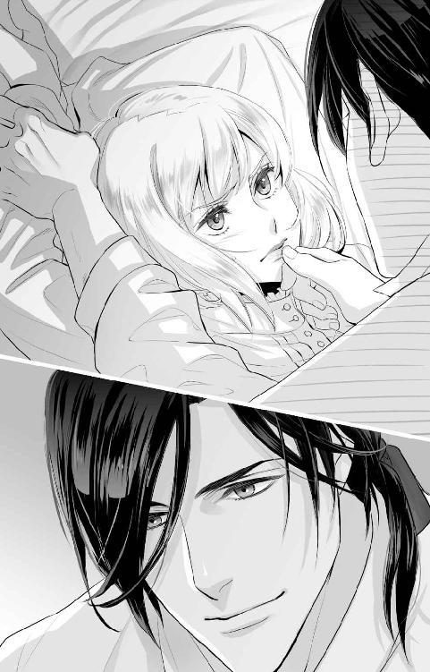
「僕は君に興味があるのですよ。なんでも、僕の企てに気づいて王妃に進言したのは君だそうじゃないですか。大した情報収集能力と分析能力をお持ちだと評価しているのです」
「それはどうも」
ジェルトリュドが他人を褒めるのはとても珍しい。口が悪く、皮肉や嫌みなど、他人を不愉快にする言い回しを好んで使う彼だ。きっと何か裏があるに違いない。真に受けないようにしようと構えていると──。
「んっ！」
不意に口づけをされた。口をふさぐように、しっかりと。
彼の乾いた唇から舌が出てきて、味見をするかのように唇をペロリと舐められる。
ぞくっとしたものが背中を走り、身体が震えた。オデットは目を見開いてジェルトリュドの様子を窺う。
「ふむ。君は想像よりもずっと甘くて美味しいですね」
気に入られてしまったらしい。満足げに微笑んでいる。いつも気難しい顔をしている彼にしては珍しい表情に、オデットは彼が本気で自分を欲しているのだと感じた。
急に怖さが増してきて、オデットは言葉に詰まる。普段ならなんでもはっきり言い返せる自分だというのに情けない。
ジェルトリュドは男性としては線が細い。背はあるが肩幅も狭い方で、華奢な印象だ。現に、着ているシャツには余裕があるように見える。それなのに、女であるオデットは彼の拘束から逃れられない。
「そう乱暴なことをするつもりはありませんよ。僕の性欲の世話をしてくれと言っているだけで」
「じゅ、充分に暴力じゃありませんか！ 何を開き直って──んっ！ んんぅ！」
再び口づけられて、今度は舌を差し込まれた。中を荒らしてくる彼の獰猛な舌を押し返そうと舌で触れると、不思議と力が抜けた。温かでぬるぬるとした感触は今まで味わったことがない。
「んんっ......」
未知の感覚に、オデットは目を閉じて与えられる刺激に集中してしまう。嫌なはずなのに受け入れようとしている自分に戸惑っていたのは最初だけだった。
「はぁっ......」
舌が離れると、互いの唇から唾液で作られた糸がつっと伸びていて、オデットはぼんやりとそれを見つめていた。
「意外と悪くなかったでしょう？」
唇を拭って、ジェルトリュドはシャツを脱ぎ始める。両手の拘束がなくなったので逃げるチャンスが来たと思ったが、オデットは自分の身体が動かないことに気づいた。力が抜けて、身じろぎすることくらいしかできない。
なに、これ......。
薬でも盛られたのだろうか。しかし、この牢の中に入ってからベッドに押し倒されるまでに触れたものにそんな効果がありそうなものはない。飲食もしていない。彼に口づけされた時に唾液とともに何か流し込まれたのかもと疑ったが、彼が仕込んでいる様子がなかったことや、そもそもそんな薬物を手に入れられるような状況でもないことを思い出した。
「ジェルトリュドさま......あなた、ご自分が何故牢に幽閉されているのかわかっていらっしゃるんですか？」
いろいろと納得ができなくて、オデットは問う。
ジェルトリュドは現王妃のロゼリーヌを暗殺しようとした罪で投獄されている。彼が王弟であり宰相という立場だった人間であろうとその罪は重い。
そんな彼をオデットは人一倍許すことができない。
何故なら、オデットがロゼリーヌの側仕えメイドだからだ。彼女の世話をするために、祖国からついてきた唯一の侍女。敬愛する主を手にかけようとした相手を当然許せるはずがなく、憎しみの感情を抱いているほどだ。
それに、あんなことをするなんて......。
唇や舌に口づけの感触が蘇る。オデットはその感触を記憶から消したくて、自分の行動を思い返した。
ジェルトリュドが幽閉されてひと月。まだ春が遠いこの時期に、暖房設備がほとんどない牢の中はさぞかし寒いことだろう。凍死されてはかなわないと毎日お湯を運ぶ仕事があるのだが、今日はその担当が体調不良を訴え、しぶしぶオデットがここにやって来たのだった。
ロゼリーヌの側仕えがこの場所に足を踏み入れることになってしまったのは、幽閉されてもなおジェルトリュドを支持する人達が使用人の中にもいるからだ。脱走の手助けをするかもしれないということで、確実に現王シルベストル派であるといえるオデットに仕事が回ってきたのであるが──隙を突かれたオデットはジェルトリュドに難なく組み敷かれてしまった。
「何故か、ね。改心を促すためでしょう？ シルベストル兄様もロゼリーヌ王妃も本当にお優しい人ですよね。実に、平和ボケしたこの国にはとても相応しい王さまと王妃さまです」
シャツをベッドの外に脱ぎ捨てると、再びオデットに覆いかぶさってきた。
意外と筋肉がある？
部屋は節約のためもあって薄暗く、物ははっきりとは見えない。しかしこの至近距離ならば別だ。出入り口にしかないランタンの弱い灯りでも、彼の素肌はきちんと見えた。
胸筋が発達し、腹筋もうっすらと割れている。投獄されてからも身体を鍛えていたのかもしれない。腕は騎士たちと比べればずっと細いのだろうけれど、筋肉の形がわかる程度にはしっかりしていた。
噂には聞いていたけれど、やっぱり男性と女性では身体つきが違うものなのね......。
投獄中の身であるにもかかわらず、清潔感の感じられる黒髪。捕まる前は整髪料で固めていたが、今は伸びた髪をひとつに結っていてサラサラしている。切れ長の目に宝石のような緑色の瞳。色白の肌には髪色も瞳の色もよく映える。二十三という若さもあって、肌に艶を感じた。
小柄なオデットから見れば彼はずいぶんと背が高い。身体つきは確かに細いが、痩せているのではなく引き締まっているといえるだろう。彫刻や絵画で見られるような肉体美とは異なるが、この薄明かりの中であっても美しい造形であることがわかる。
ジェルトリュドは、どの部分を取っても綺麗な男だ。
オデットはため息をついた。これでは勝ち目はないと体格差から思う。ジェルトリュドの視線を追うのも面倒になって、オデットは顔を背けた。諦めてしまったら、シルベストルと似た美しい顔立ちを見ているのもつらくなってきたのだ。
ひと月ぶりに見たジェルトリュドの顔は、幽閉生活で質素な食生活を強いられ多少頬がこけた印象はあったが、今もなお妖しい色気があった。穏やかな表情のシルベストルと険しい表情のジェルトリュドが並ぶと優劣をつけにくい美青年二人といった感じだったが、それは健在のようだ。
「わかっているなら、改心したふりでもなさればいいのに」
彼の台詞がシルベストルとロゼリーヌを褒めているわけではないことくらいわかる。この男はそういう人物だ。言いたい放題されるのが嫌で言い返すと、ジェルトリュドはオデットの首筋を露出させて口づけを落とした。チクッとした痛みが走る。
「それで騙されるような君でも兄様たちでもないでしょう？ だとしたら、僕の矜持を捨ててまですることじゃありませんね」
答えて、彼は首の付け根から耳のあたりまでゆっくりと舌を這わせた。身体がゾクゾクとして、オデットはぎゅっと目を閉じる。
「やっ......んっ......」
我慢しようと思っているのに、声が自然と漏れた。いやらしいことをされているのだという自覚はある。そして、この行為を受け入れることは忠誠を誓う二人を裏切ることのような気がして、オデットは胸が張り裂けそうだった。
もっとあたしが強かったら、跳ね除けるのに......。
悔しい。だが、何もできない。今はただ、自分は人形だと言い聞かせて、彼が喜びそうな反応はできるだけ避けて興味を失ってもらうことに期待するしかなかった。こんな男に抱かれたくはない。初めてを捧げるなら、愛せる人がいい。
「ふむ......。抵抗はここまでですか？ 暴れるんじゃないかと思って、縛るものも用意したんですが」
黙ったままじっとしていたからだろう。ジェルトリュドは一度上体を離すと、つまらなそうにオデットを見下ろす。彼の美しい緑色の瞳が興味をなくしているように感じられた。
「そういう趣味なんですか？」
オデットが問うと、ジェルトリュドは笑う。
「どうかな。僕自身には特殊な趣味はないつもりですけど、君がそうしてくれというなら縛りますよ。無理やり犯されたと主張したいのであれば、縛った痕をつけておいた方が便利だろうとは思いますが」
ジェルトリュドの提案に、オデットはそれも一理あるなと思ってしまった。同意していたわけではないことを示すのには、そういう証拠はあった方がいいかもしれない。
「ですが、僕としては、女性の肌に傷をつけるのは好きではありません」
告げて、ジェルトリュドはオデットのブラウスに手をかけた。抵抗する間もなくボタンが外され、ブラウスが取り除かれる。
手慣れている......。
下着姿にさせられて、オデットは胸元を両手で隠した。隠さなきゃならないほどの胸がないのは切ないが、それはそれで恥ずかしかった。
ジェルトリュドはオデットの肌を、それこそオデットがしたようにまじまじと見つめ、やがて右腕を取った。
「きゃっ！」
彼の指先が腕をすっとなぞって、彼が何を見ようとしていたのかを理解した。
火傷の痕だ。
「話には聞いていましたが、残ってしまっているのですね」
右手首の上から肩に近いあたりまでの広範囲に火傷の痕があった。ロゼリーヌ王妃暗殺事件の一つに巻き込まれたとき、火を被ってしまってできたものだ。幸い服で隠せる部分ではあるので普段は気にならないが、異性に見られるのはやはりためらわれた。
ジェルトリュドが痕に優しい口づけを落とす。触れられるとくすぐったい。肩のあたりから順番に降りていき、手首に唇を当てたあと、指先を壊れ物を扱うように持ち上げてオデットを見つめた。悲しそうな表情で。
「僕が起こした事件で負った傷だとは聞いています。申し訳ないことをしました」
告げて、指先に口づけを落とす。何故か身体がビリッと痺れた。
「侍女を連れているとは知らなかったのです。怪我をさせるつもりもありませんでした。この目で傷を見て、きちんと謝りたいと思っていたのです」
「別に、今さら結構です。服を着ていれば見えないですし。この冬の寒さで肌が引きつったりはしますけど、日常生活には支障はないのでご心配なく」
彼の手を振りほどくようにして離し、オデットは再び自分の小さな胸を隠す。
「あの、別にあたし、この件ではあなたを恨んでいませんから。火傷だって、ある意味自分の不注意で招いたこと。責任とか、感じなくていいんですからね」
なんとなく、傷物にしてしまったから、かこってやりたいのだなどと言い出しそうな空気を感じて、オデットは先手を打つ。そんな理由でジェルトリュドに憐れまれたくもなかったし、それを盾にして抱いてほしくもない。だったらまだ、オデット自身の有能さに興味を持って抱いてみようと考えたという方がありがたかった。
「火を被ったせいで、髪も切ったのでしょう？」
オデットはハッとする。ジェルトリュドはオデットのことをそれなりに調べているらしい。火傷のことだけでなく、長かった髪を肩口で切り揃えねばならなくなった理由まで知っているなんて。
「えぇ。しかし、これはこれで手入れがラクなので」
本当のことだ。決して強がっているわけではない。
オデットがはっきり答えてやると、ジェルトリュドは首元に顔を近づけてオデットの銀髪を一房すくった。
「絹のような肌触りのいい髪です。長かった頃はさぞかし美しく風にたなびいていたことでしょうね」
彼の口から賛辞が述べられることは貴重で、オデットにはそれが薄気味悪く感じられた。
「さぁ、どうだったかしら」
オデットの銀髪を褒めてくれたのはロゼリーヌくらいのものだ。だから、事件で命拾いをして髪をばっさりと切ったとき、彼女はオデットが生きていたことをたいそう喜んでくれたが、一方で短くなった髪と火傷の痕を悲しみ惜しんでくれた。
「ぜひ、伸ばしてください。君の長い銀髪を愛でたいので」
「......お得意の嫌みは出ないんですね」
「君を精いっぱい口説いているんですよ。嫌がる君を抱くのも悪くはないですが、初めてなんでしょう？ できるなら、気持ちよくさせてあげたいじゃないですか。ここに通いたくなるくらいの快楽を教えて差し上げたいと考えているがゆえです」
思わず出てしまった台詞に、ジェルトリュドは真面目な顔をして答えた。
彼の台詞を聞いて、オデットはぞっとする。
「い、一度だけじゃなく、またあたしを指名するつもりなんですか？」
実際は指名などできない。当番制でジェルトリュドの世話が回ってくるが、その中にオデットは入っていないからだ。あくまでもオデットはロゼリーヌの身の回りを世話する人間。今日は例外中の例外。他に空いている人がいなかったからここに来ただけなのに。
「えぇ」
オデットの問いに短くジェルトリュドは返事をして、そして首を傾げた。
「まだ気づいていないんですか？」
「何を？」
「聡い君なら、そろそろ気づくと思っていたのですが......まぁ、いいでしょう」
何を言っているのかわからない。オデットがキョトンとしていると、ジェルトリュドは頬を撫でながら微笑んだ。
「君がここに来るように僕が仕組んだのですよ。交代でくる使用人たちにそれぞれ仕事を言い付けて。あまりあからさまな注文をすると、僕の計画が知られてしまいますから、結構骨が折れましたよ」
「なっ......」
「ひと月かかって、こう寒さが増してきた頃に来てもらえて助かりました。この冬の寒さは人肌で暖をとるのにちょうどいいですからね」
呆れて絶句するオデットを、ジェルトリュドは抱き締める。耳元に鼻先を寄せて、囁いた。
「うん。君はとてもいい香りがする。ロゼリーヌ王妃が使っている香水の匂いもあるのでしょうかね」
彼の手が胸元に伸びようとしているのに気づいて、オデットは我に返った。
「ま、待って。ジェルトリュドさま！ あ、あたしみたいな貧相な身体を求めなくてもいいと思うんです！ なんとか言いくるめて、そういうお仕事の人をこちらに連れてこれるように手配しますから、ね。あたしじゃなくてもいいでしょっ──ひゃっ！」
伸びた手はオデットの腕をうまくかわして胸に触れた。小さな丘を確認するように撫でられると、くすぐったくて声をこらえるのがつらい。
「貧相ということもないと思いますがね。ロゼリーヌ王妃はメリハリのある身体をお持ちだと思いますが、君には君の良さがあるでしょう？」
「そ、そうですけれど......んんっ......」
胸の先がジンジンと痺れている。今まで感じたことのないもので、オデットは戸惑った。自分の身体に何が起きているのかわからない。
「僕には充分です。それに、胸を育てたいと思っているのでしたら、協力できると思いますよ。男性に触れられると発達するそうですから」
撫でられていた胸が刺激に反応している。先端が硬くなって飛び出てきたらしい。そこを指の股でキュッと挟まれる。途端に痺れが全身に広がった。
「あっんっ！」
「僕を嫌っていて、男性経験もないはずなのに、感度は良いのですね。感じていただけているようで嬉しいです」
「違っ、これは......ひゃっあん！」
感じていると言われても、何を感じているのかオデットにはわからなかった。ただ、彼に硬くなった先端をしごかれると、身体は自然とくねってしまう。やめたいのにやめられないし、制止の言葉を口にしたくても全く声にならない。出てくる声は、どことなく甘くていやらしく部屋に響く。
「もっと苦戦すると思っていたんですがね。想像よりも素直な方なのですね」
「違うのっ、あっ......あたし、こんなのっ、やっ......」
触れられている胸だけでなく、下腹部も反応している。脚の付け根がピクッと震えるのを感じて、オデットは怖くなってきた。自分が自分でなくなってしまいそうで。
「心配しなくていいんですよ。女性なら誰でもそういう反応をするものです。君は僕が与える刺激を受けとめて、気持ちよくなることを素直に認めればよい」
「やっ、やだぁっ......お願い、許して......これ以上は......あっ......」
脚の付け根の異変が気になっていた。触られてもいない場所が反応するのが全く理解できない。落ち着かなくて太腿を擦り合わせていると、ジェルトリュドにそれを気づかれた。
彼の手が胸から離れていく。
「おやおや。僕としたことが、胸だけでなく他の場所もあやして差し上げないといけませんよね」
ジェルトリュドの手がスカートにかかる。胸が解放されて安堵した瞬間、スカートが下着も合わせて引き抜かれた。
「やっ」
「コルセットも外しておきましょうね」
彼の手がかかる。あっという間に紐も解かれてコルセットも外された。これで身を隠すものは何もない。
「ジェルトリュド、さま......」
羞恥のあまり、オデットは瞳に涙を浮かべる。胸と脚の付け根をそれぞれの手で隠し、ジェルトリュドを見上げる。逃げ出したい気持ちはあるはずなのに、抵抗できることといえば身体を隠すだけだった。
「綺麗な白い肌ですね。それだけに、傷が目立ってしまっているのですが......」
舐め回すように緑色の瞳で見られると、身体が熱を帯びてくる。室内は寒いはずなのに、それを忘れさせる程度に体温が上がっていた。
「もっと早く、君に会いたかった」
そう言って、ジェルトリュドは身体を覆うように抱き締める。そして深い口づけをした。気づけば目が閉じていて、彼の刺激を目いっぱい受け入れようとしてしまう。
「んんっ......うんっふっ......」
歯を舌でなぞられ、頬の内側をこそげるように撫で、喉の奥の方を丁寧に擦り、最後にオデットの小さな舌を嬲る。
拒否などできなかった。彼の舌の動きに翻弄されて、頭の中がいっぱいだ。彼の胸板に擦れる自身の胸の先端も、全身を震わせるような甘い痺れを発生させている。
自然と太腿を擦り合わせてしまうと、そこにジェルトリュドの片脚が入り込んだ。
「んんっ！」
股を閉じられないことに気づいて目を開けると、ジェルトリュドは不敵な笑みを浮かべていた。
何をするの？
彼の挙動に警戒したとき、片脚を担がれた。
「やっ」
慌てて閉じようとするが固定されてしまっている。開かれた脚は、誰にも見せたことのない秘部を彼の眼前に晒していた。
「み、見ないでっ！」
手で隠そうとすれば彼の手に阻まれる。それでも見せたくなくて必死に腕を動かしていたら、彼はどこかから細い布を取り出してオデットの手首を縛ってしまった。こうされると、もううまく腕を動かせない。
「やっ、許して。もう、お願いっ！」
懸命に告げるオデットの声を無視して、ジェルトリュドは左右の太腿を撫でて、付け根に向かう。その刺激で身体が震え、股の間から何かが溢れ出したのを自覚した。
失禁してしまったのではないか──そう感じてうろたえていると、ジェルトリュドの長い指先がそこに触れた。
「あっ......」
ぬるりとしていた。くちゅっという水音を立てて、ジェルトリュドの細い指を濡らす。
「こんなにさせて。よほど気持ちが良かったのですね」
彼の中指が割れ目を往復する。くちゅくちゅと音がするたびに、そこからまた何かが漏れ出すのをオデットは自覚した。
「さ、触んないで。汚いですから......」
どうにか逃れたくても、身体は固定されているし、手は縛られているしで身動きが取れない。どうしたら解放してくれるのだろう。オデットの頭の中はそのことだけなのに、彼から与えられる刺激に時々真っ白になる。脱出の方策が浮かばない。
「とても綺麗ですよ。君は知らないのかもしれませんが、この蜜は男を虜にするものなんですから」
ジェルトリュドはオデットの割れ目からすくった蜜を見せる。中指と人差し指に纏い付いた粘性のある透明な液体は、彼が指を開くととろりと膜を張った。
「なんなの？」
自分の身体から出てきたものとは思えない。それが尿ではないらしいことは理解できたが、ジェルトリュドが蜜だと表現するそれはどこからやってきたものなのだろう。
「試食してみましょうか」
告げて、彼は指に纏っていた蜜を長い舌で舐め取る。
その行為を見て、オデットは何故か絵になるなと感じた。ゾクゾクとする。それが興奮のためなのだと、やっと理解した。
「......ふむ。甘みを感じますね。嫌がっていない証拠です」
彼の緑色の瞳が恍惚の色を宿したのを見て、オデットは我に返る。これ以上、彼の勝手を許すわけにはいかない。この行為に快感を得始めている今はなおさら。
「い、嫌に決まってるでしょっ！ 勝手なことばかり言ってないで、解放してくださいっ！」
いつもの自分らしく拒絶の台詞を言えた気がする。オデットがにらむと、ジェルトリュドはふっと笑った。
「そうは言いますが、この蜜は嫌がっていると酸味が強くなるものなんですよ。自分でも味わってみます？」
告げて、再び股の間から溢れる蜜をすくい取る。その刺激にぞくっとしたのを悟られないようにこらえていると、彼は濡れた指先をオデットの唇に這わせた。
「んっ？」
「ほら、舐めてごらんなさい」
ジェルトリュドは指に残る蜜を口に含めと促してくる。
手を拘束されて拭うことができなくて、オデットはしぶしぶ自分の身体から出てきた謎の液体を舌で舐めとった。
「......甘い？」
砂糖のように甘いわけではなかったが、どんな味かと問われたら甘いと答えるのが適当のように感じられる。
「でしょう？ 君の身体は、少なくとも僕を受け入れてもいいと感じているのですよ」
勝ち誇ったような顔をしたあと、オデットの唇に残る蜜を口づけをして拭った。長い舌が優しく唇を往復すると、身体が小さく震える。それが怖いからではないことは、認めざるをえなかった。
「やっ......それでも......あたしは......」
口づけに酔わされている。挨拶としての口づけなら、経験はあるが、こんな淫らな口づけは知らない。何度もされているうちにいろいろな部分が麻痺してしまっているようだ。
「心配しないで。優しくしますよ」
「信用できませんっ！ だって、あなたは──あんっ！」
抱き締められる。そして身体の側面を移動していたジェルトリュドの手のひらが、臀部を撫でて股の部分にあてがわれた。
指先が濡れた割れ目を撫で、前の方に擦られる。構造がどうなっているのかオデットにはよくわからなかったが、割れ目が始まるあたりに小さな突起のようなものがあるらしい。そこに指の腹が少し擦れただけで、奇妙な痺れが下腹部を刺激した。
「膨らんできたようですね」
「な、何が......？」
楽しげに告げるジェルトリュドを見ていると、自分が淫らな何かに変えられてしまっているような気がして怖くなってくる。でも、やめさせたくても頭が働かなくて脱出方法が浮かばない。
こんなことになると少しでも警戒していれば、対策を実行できただろうか。そんな後悔が脳裏をよぎるが、今さらのことだ。彼に選ばれてしまったことを恨むしかない。
「君が気持ちよくなれる場所です。この牢から出て寂しくなった時、僕を思い出しながらご自分で慰めるといいと思いますよ」
何を言っているんだと言う前に、彼の蜜を纏った指がその突起を擦った。押さえるように強く擦られると、ジンジンして腰がくねる。
「やっんっ！ やめっ......はぁっ......そこ、触っちゃ、や、んっ！」
逃げようとしているのか、ねだっているのかわからない動きになってしまっている。
オデットは焦った。この刺激がさらなる快感を呼ぶらしいことを察してしまったからだ。
「気持ちがよくなってきたのでしょう？ ほら、息も上がっていますね。汗もかいてきましたか。よい反応だと思います。素敵な表情だ」
「いやっ......あんっ！ 助けて......はぁっ......許してっ......」
自分が何をしたというのだろう。憎むべき相手にこんなことをされて感じるなど、あってはならないこと。行為自体を拒否せねばならないが、自分の身体の反応が最も信じられなかった。
「やぁんっ！」
唇を唇でふさがれる。声を出せない。
ジェルトリュドの舌が差し込まれ、丁寧に中を舐められる。舌が触れ合って動けば、さらに蜜がこぼれて彼の指の動きをよくした。小さく円を描くように刺激を受ける突起は、どんどんと肥大しているような気がする。
やだ......こんなの......。なんか......おかしい......。
全身に伝わる刺激の全てが快感に変換されてしまったように錯覚する。彼から伝わる熱も振動も圧力も、果ては身体を支えているベッドの硬さやいつも使っているものよりもごわごわした敷布の感触も、本当にその全てが身体を狂わせている気がした。
「んんぅっ？ んんっ！」
内から溢れる熱で思考が溶かされたように感じた瞬間、視界が真っ白になってびくんと身体がしなった。爪先がピンと伸び、やがて弛緩する。尋常じゃない量の汗が吹き出た。まるで真夏の暑さの中に放り込まれたよう。熱による気だるさもどこか似ていた。しかし今は真冬。しかも王宮の中では最も寒いだろう離れの塔に作られた牢屋の中だ。
「はぁ......はぁ......」
ジェルトリュドの唇が離れて、上半身も離れていった。彼は見下ろして、優しく微笑む。こうした表情は兄のシルベストル王とそっくりだ。
「達したようですね。僕の手がびしょびしょになってしまいました」
見せられた右手は確かに濡れていて、薄明かりの中でもてらてらと光って見えた。
「......気が済みましたか？」
一つの区切りがついたように感じて、オデットは上がった息の合間に問う。
男女の交わりというものがこの程度で終わらないことは知識としては持っている。女性の身体の中に、男性の一部分を受け入れて終えるらしいという程度ではあるが。まだ表面に触れられただけなので、ここまでの行為はおそらく違うものなのだろう。
かなり不本意ではあったが、ジェルトリュドを楽しませることができていたのであれば、解放してもらえるかもしれない──そんな淡い期待があったのだが。
「いえ。ひと月も溜めたんですから、これで終わりにするつもりはありません。それに君だって、まだ身体がくすぶっているでしょう？」
問いながら、ジェルトリュドはオデットの胸に濡れた手を這わせた。否応なしに身体がピクピクと痙攣する。
「やっ......もう触らないでっ......んんっ......」
身体を横にして逃れると、彼の手は執拗に追ってきた。硬くなった頂きを摘み、ぬるぬるした指先で擦る。
「ああんっ！ やっ、やめっ、あっ」
強い刺激に、背中がびくんとしなった。こんな身体の反応は経験したことがない。
ジェルトリュドは楽しそうに声を立てて笑う。
「ふだんの僕なら、今のような反応をする女性に淫乱だのメス犬だのと暴言を吐くところでしょう。ですが、君には言えませんね。本当に綺麗だ」
彼に向けていた背に、唇が降ってきた。肩甲骨や腰のあたりに口づけを降らせたあと、背筋に沿って下から舐め上げられる。その刺激でオデットはさらに仰け反った。
「ああんっ！」
「声も想像以上に可愛い。こんなに喘いでくれるなんて。しかもそれは僕を煽るための演技じゃないですからね。......オデット、君みたいな人を僕は待っていたんだ」
背後から抱き締めて、首筋に口づけをする。胸を優しく揉みながら、首筋を舐めるようにして耳元に移動し、耳たぶを甘噛みしてくる。その刺激の一つ一つが身体を痺れさせた。
「やっ......んんっ！ もう離して......」
口説かれていることはわかった。何か思惑があって誘惑しているのかもしれないという警戒は怠らない。だから簡単に陥落させられるわけにはいかないとオデットは強く思う。
一方で、彼が最初に宣言したように、乱暴なことはされていないように感じられた。手首は縛られてしまったが、暴力をふるわれたとは思っていない。彼が気遣ってくれているように錯覚しているからだろうか。
「素直に身を任せればよいのに。より気持ちのよいことを教えて差し上げますよ」
胸をいじっていた手が腹部を撫でて、柔らかな茂みにやってくる。縛られたままの手で退けようとするも、ジェルトリュドの手は濡れた股に戻ってきた。
「やめて......もう、そこは......あっ！」
濡れたままになっている割れ目に彼の長い指が潜り始める。さっき快感を教えられた場所には用はないらしく、割れ目を何度か往復して何かを探っている。
「僕を受け入れてもらうためにも、慣らしておかないといけませんからね。痛くならないように、しっかりほぐさないと」
「な、何を？」
オデットの問いは、彼の指先が答えた。割れ目を往復していた指が、ぐっと身体の中に押し込まれる。
「ひっ！」
内側に異物が入り込んだ感覚があって、オデットは反射的に身を強張らせた。それが背後にいたジェルトリュドに伝わったのだろう。オデットを抱き締める腕に力がこもった。
「力を緩めて。あんまり力むと、中を傷つけてしまうから」
耳元で囁かれる台詞は、とても真面目で真剣さを感じる。
「で、でも、どうしたらいいのか......はぁ......わかんないし」
中に入れられた指は動かない。それはオデットがきつく締め付けているからだろうか。
「そう......ですね......。体勢を変えましょうか」
ジェルトリュドの指が引き抜かれたのがわかる。その瞬間にヒクヒクと中が蠢くのがわかった。まるでそこに別の生き物がいるかのような奇妙な感覚だ。
そんな自分の身体の反応に気を取られていると、オデットの身体は再びジェルトリュドによって仰向けにされる。そして彼の手が両膝を掴んだと思ったら、左右に大きく開かれた。
「や、ちょっと待って！」
うろたえるオデットを無視して、ジェルトリュドは熱っぽい視線を脚の付け根に送る。やがて嬉しそうに微笑んだ。
「朝露に濡れる薔薇の花のようですね。色も形も素晴らしい」
「な、なんのこと？」
「ココのことですよ」
ジェルトリュドはニンマリと微笑むと、顔をオデットの股間に沈めた。
「やっ......あんっ！」
最初、何をされたのかわからなかった。ぬるりとした温かなものが、割れ目をなぞったらしいことはわかる。それが彼の指ではないことは明白だ。彼の手のひらは、オデットの脚を開くために固定されていたから。では、その正体は。
まさか、舐められた？
彼の舌が割れ目をなぞったのだと理解した瞬間、羞恥で体温が急激に上がった。
「や、やめてっ！ そんな場所、舐めるもんじゃ......はぁんっ」
離れようと腰を浮かした時、彼の舌がさっきまでいじられていた突起に触れる。甘い痺れが全身に波及し、小さく身体が跳ねたあとにベッドに沈む。息が上がる。苦しい。
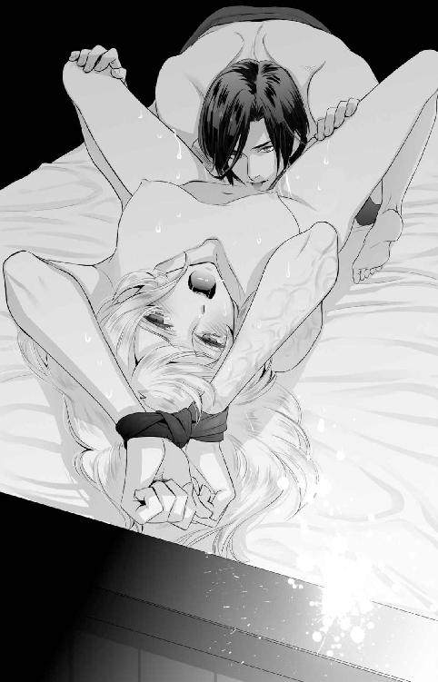
「今度は舌でいじって差し上げましょう。同時に膣も拡げていきますね」
短い説明。拒否の言葉を発する前に、彼の舌は脚の付け根の唇を丁寧になぞり始めた。今までならなんとも感じなかっただろう場所に送られる妖しい刺激は、オデットの身と心を溶かしていく。
「やぁっ......はぁんっ......もう......限界なのっ......ああっ、んっ」
大きな波が来そうになると、彼は刺激を止めて様子を窺ってくる。くすぶりが鎮まりかけたところで、ジェルトリュドは再び舐め始めた。それを繰り返されると、徐々に快感の波が高くなっていくのがわかる。
「怖い......ねぇっ、あっ......ジェルトリュド、さまっ、やめてっ......」
汗なのか涙なのか、顔をたくさんの水滴が濡らす。
舐めている間は声をかけてもらえない。それが少し心細く、部屋に響く水音と自身の喘ぎ声ばかりが耳に入って気がおかしくなりそうだった。現実離れしすぎている。ジェルトリュドが幽閉されている牢屋の中という状況も、どう考えても理解できることではない。
「ああっ......ジェルトリュド、さまっ......」
名を呼んでも答えてくれない。与えられる快感に、だらしなく唾液が唇の端から流れる。こんなみっともない姿を晒していると思う一方で、いつまでこうしてもらえるのだろうかとも期待してしまっていた。
「君は......ここがお気に入りのようですね」
やっとジェルトリュドの声がした。舌ではなく指先の感覚がある。突起を優しく撫でて、触れたままそこと尻との間にある部分にやってくる。
「今触れているのが君の花びらです。赤くてつやつやとしていて、とても美しい場所。それからここが──」
彼の長い指先が花びらだと教えた場所の間に沈められる。蜜がたっぷりあったからか、くちゅっと音を立てて指が入っていった。第二関節まで沈めたところで、壁面を優しく撫でる。身体がざわざわと騒いだ。
「これから僕を受け入れる膣と呼ばれる場所です。まだまだ狭いですが、さっきよりは苦しくはなさそうですね」
背後から抱き締められている時と比べれば、苦しくはなかった。異物感はあるものの、痛みは感じない。
オデットが小さく頷くと、ジェルトリュドはホッとしたような顔をした。こういう優しげな表情はこっちまで安堵してしまうからずるいとオデットは思う。彼が、自分が日頃から恨んでいる相手であることをつい忘れてしまいそうだ。
「指で慣らして、膣を少しずつ拡げます。傷つけたくないので、暴れないでくださいね」
右手の中指だろうか。ぬるりとした蜜を纏っているからか、押し込まれるとあっさりとその全体を膣が受け入れた。続いてゆっくり引き抜かれる。
「んんっ......」
その動きにどんな意味があるのか、オデットにはわからなかった。ただ、されるがままに声を出す。
「力まないで。大きく呼吸して」
言われても、うまくできない。どうすればうまくいくのかと考えていると、激しい痺れが全身を駆け抜ける。
「はっ、やっ」
指を入れた状態で、彼が突起を唇で挟んでいた。そうだと理解するまでに数秒を要し、続けて与えられる刺激で腰が浮きそうになった。
「やぁんっ！」
「ふっ......声を上げさせるのが一番のようですね。僕の声が聞こえないのを寂しそうにしていらっしゃったのでためらったのですが、致し方がありません」
気づかれていたの？
オデットは自身の気持ちを彼に悟られていたことに恥ずかしさを覚えた。ジェルトリュドには余裕があるらしく、ずるいとも思う。
しかし、彼を詰っている時間を与えてはくれなかった。ジェルトリュドがオデットの感じやすい突起を舌で転がしながら、指の抽挿を始めたからだ。
「あぁぁぁっ！ いやぁぁぁっ！」
ひときわ大きな嬌声が上がる。誰も助けてくれない。次々と迫り来る快感が怖い。
だが、それ以上にこの快感に溺れかけている自分自身の変容に、オデットは恐ろしさを感じていた。
息が苦しい。叫び疲れてぐったりとしてきた。汗なのか蜜なのか、敷布はどこもしっとりとしている。
「そろそろよいですかね」
どのくらい時間をかけていじられたのかわからない。オデットは何度か小さく達して震え、それでもジェルトリュドはその行為をやめてはくれなかった。
気づけば膣を探る指の数は三本に増えていて、中を圧迫している。最初は一本だけでもきつかったのに、そんなに拡がるとは思わなかった。痛みはなく、動かされると奇妙な気持ちになる。浮遊感とでも言おうか。自分が覚醒状態にあるのかどうか疑わしい気分だ。
「ジェルトリュド、さま......」
涙を浮かべて、オデットは彼の名を呼ぶ。心も身体も壊されてしまいそうで怖い。普段は絶対に見せないだろう優しげな顔をしてこんな行為を仕掛けてくるのは、まさにそれが目的なのかもしれない。ジェルトリュドは、そういう人だ。捕まってしまったら、もう逃げられない。
「可愛い可愛い僕のオデット。どうか、僕を怖がらないで。僕を受け入れて」
ジェルトリュドの指が引き抜かれた。ランタンの光を受けててらてらと光る指先がオデットの手首にやってくる。そして縛めを解いた。
「ジェルトリュドさま？」
オデットの声は掠れている。叫びすぎたせいだ。
これで終わりなのだろうかとわずかに首を傾げると、ジェルトリュドは口づけをしてくれた。濡れた唇がぬるぬるとしていて、それまでの口づけとは感触が違う。舌先で唇をこじ開けられて、互いの舌が触れると身体がビクッとわなないた。
ジェルトリュドの大きな手のひらが背中を撫でて、臀部に触れる。その柔らかさを確認するようにやわやわと揉みながら、一方で舌はオデットの口腔内をまさぐった。
「んんぅっ......」
流し込まれる唾液を飲み込む。次々に与えられる刺激で頭の中が真っ白になった。
「はぁ......はぁ......」
彼の唇が離れて、喘ぐように浅い呼吸を繰り返す。喉の渇きが少し和らいだ気がした。
「オデット。君を今から僕のものにしますね。最初はきっと痛むと思いますが、できる限り気持ちよくなれるように努めます。君は初めてだから......オデット、痛くてつらかったら言ってくださいね」
どこか切なげにジェルトリュドは告げると、穿いていたトラウザーズと下着を脱ぎ捨てた。
「もう......やめて......」
ここから先は取り返しがつかないのだろう。力の入らない脚を持ち上げて、改めて大きく広げてくるジェルトリュドに、オデットは懇願した。願ったところで彼はやめないとわかっていても、自分の意思はちゃんと伝えたかった。
「僕はやめませんよ。......こんな機会、もうないかもしれないのですから」
彼の決意が、その声から感じられた。
どうしてあたしなの？
計画的犯行であることを彼がほのめかしていたので、ただの気まぐれや暇つぶしではないのだろう。だとすれば、彼の性格から考えると嫌がらせとしか思えない。
こんなことで純潔を奪われるなんて。
嫌がらせならば、優しくなんてしてほしくなかった。敬愛するシルベストル国王みたいな優しい顔なんて見せないでほしかった。いつもみたいに冷たそうな、周りを蔑んでいるような表情で、罵りながら抱いてくれれば、彼を憎んでいられたのに。
「挿れますよ」
ぬるぬるとした花びらに、熱い棒状のものが擦り付けられる。その行為にオデットは身体を震わせていたが、やがて熱い棒は花びらから蜜の溢れる場所めがけて突き立てられる。
「んっ」
ぐっと押し込まれて膣が拡がるのがわかった。肉を引き裂かれるような痛みが走って、オデットは苦痛で顔を歪める。
「くっ......まだ狭いですね......出血させてしまうかもしれませんが......」
ジェルトリュドの呻く声が聞こえて、膣に挿入されたものが彼の一部であることを察した。彼の細い身体のどこにこんな器官が隠されていたのかと疑問に思う間もなく、ぐっとさらに奥へと押し込まれた。
「いやぁぁぁっ」
傷口に指を入れて開かれているような感覚だ。痛くて痛くて耐えられない。思わず悲鳴を上げてしまう。
しかし、ジェルトリュドは許してくれなかった。
「破瓜は痛いものなのです......申し訳ない、オデット。日数をかけるか、媚薬でも使えばマシだったのでしょうけれど......くっ......君は締まりがいいのかもしれませんね......はぁ......」
「いやぁっ！ ぬ、抜いてっ！ 痛いっ！」
反射的に逃げようとする腰を、ジェルトリュドはしっかりと捕まえてさらに穿った。じわじわと押し拡げられると、痛みと同時に別の感覚もやってくることに気づく。
な、なに？
「全部を挿れるには......動いて慣らさないと難しそうですね......」
ジェルトリュドは苦しげな表情でオデットの顔を覗き込む。
「やっ......抜いてっ......」
動くだなんてとんでもないことだ。これ以上動かれたりでもしようものなら、痛みで意識を飛ばしてしまうかもしれない。みっしりとした質量を感じるそれを早く抜き去ってラクになりたいとオデットは願う。
首を小さく横に振っていると、ジェルトリュドはオデットの唇を捕らえてふさいだ。舌先であやされると、オデットの身体から不要な力が抜ける。その瞬間、ズンとさらに腰を穿たれた。
「んんっ」
痛みで涙がこぼれる。
「オデット......すまない。動きますよ」
ジェルトリュドの額に汗が浮かんでいた。オデットがそれに気づいた時、彼は腰を動かし始める。ゆっくりと引き抜き、蜜口から熱棒が抜けかかるともう一度奥へと押し込まれる。
「ああっ」
腰に響く痛み。硬さを増した熱棒は再び抜かれるギリギリまで戻ったかと思うと、一気に膣の中へと突き立てられた。その繰り返しに、オデットは苦しみの声を漏らす。
「オデット......早く慣れて。君と一緒に果てたいんです」
彼が何を言っているのかわからない。こんな痛みに慣れるはずはないのに。腕に火傷を負った時よりも激しく股間が痛む。オデットは敷布を強く握った。少しでも痛みを発散させるために。
「オデット」
ジェルトリュドは彼女の名を呼び、唇をふさぐ。啄むように何度も角度を変えて。唇を食むたびに、腰の律動は速まる。
「んんっ」
痛いだけのはずなのに、やはり痛み以外の感覚がある。グチュグチュという卑猥な水音とベッドの軋む音が牢の中に響き、異質な空気に包まれているからそんなものを感じるのか、はたまた痛みから逃げたくてそんな錯覚をしているのか。
ジェルトリュドの口づけが首筋に向けられる。汗ばんだ肌を舌がなぞると、表面がざわついた。快感が生まれて膣が締まる。
「くっ......きつくなりましたね。首は弱い場所のようで」
抽挿を繰り返しながら、ジェルトリュドは嬉しそうな声で囁く。
「弱くなんか......はぁ」
「もう、それほど痛みを感じていないようですね。速度を上げましょう」
痛みはまだ続いているというのに、ジェルトリュドは勝手に速度を変えた。上体を起こすとオデットの脚を持ち上げ、膣の奥の深い場所を突き始める。
「やぁっ」
不思議と痛みはなかった。しかし、クラクラするような官能の波が押し寄せてきたのに気づく。身体がぶるりと小さく震えて、オデットは目を瞬かせた。
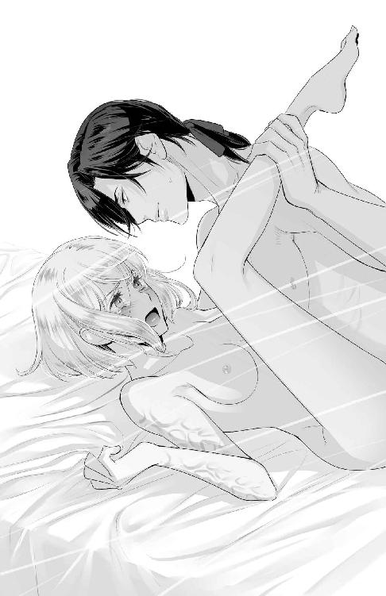
「気持ちがよいでしょう？ ......はぁ。君の身体が僕を受け入れたがっているのです」
汗ばんでいるのはオデットの身体だけではない。打ち付けてくる彼の身体も汗ばんでいるらしく、触れる肌がベタつく。蜜が溢れているだけではないのだろう。
「気持ちよく、なんか......」
否定したいが、身体が歓喜に震えているのがわかってしまった。ジェルトリュドに感じやすい突起をいじられていた時の感覚に近い。ゴツゴツと最奥を突かれると、快感の波が押し寄せる。
「あっ......」
規則正しい律動に、オデットは完全に身を任せていた。痛みを逃がすことよりも快感から逃れたくて身をよじり、腰を動かす。それがさらなる官能を呼ぶとは知らないで。
「あんっあっあっ」
未知の快感に抗うことなど、経験のないオデットには不可能だった。
素直に声を出すと、膣が動いて彼を優しく飲み込む。腰を動かせば、収まりのよい場所に彼を自然と導く。どんどんと気持ちのよい場所に刺激が集まっていった。
「中に......出しますよ......」
いよいよ終わりを迎えるらしかった。膣の中を動く熱棒がより太さを増したように感じ、その瞬間、オデットの深い場所に大量の熱が吹きかけられた。
「ああっ！」
オデットの身体がしなる。爪先がピンと伸び、ぶるぶると痙攣する。視界が真っ白になり、ジェルトリュドの姿を映し出すことなく意識を手放していた。
オデットが意識を取り戻した時、自分が裸で、しかもジェルトリュドの腕の中にいることに非常に驚いた。
どうして......。
記憶を辿り、自分の身に起きたことをゆっくりと思い出す。それと同時に身体が軋むことにも気がついた。あれだけ激しく突かれたのだ。初めて身体を開かれたのだからタダで済むわけがない。
あたし......。
ジェルトリュドに抱かれてしまった。しかも、最初は嫌悪感が勝っていたのに、最後は乱れて彼を受け入れてしまった。逃避としての反応だったのだとしても、そんな行動をとった自分自身が異質なもののように感じられた。
汚されてしまったのに。
ジェルトリュドは眠っているようだ。目を閉じて眠るさまは無防備で、オデットに気を許しているとしか思えない。
ふさふさとしたまつ毛、弓なりの整った眉毛。すっと通った鼻梁、薄い唇。色白の肌は男性にしてはキメが細かいように見える。美しい彫刻のような顔のこの青年が、オデットをいいように扱った張本人だ。
今なら、殺せるかしら。
いっそ、動かないようにしてしまうのもいいのではないかとオデットは思った。自分を犯した相手であるし、主人であるロゼリーヌ王妃を暗殺しようとした相手でもある。今まではそんなことができるような状況でもなかったので考えもしなかったが、これは滅多にない機会ではなかろうか。
オデットは彼が目覚めないように上体をゆっくりと起こすと、ジェルトリュドの首に手を掛けた。寝ている相手であれば、首を絞めて殺害できるのではないかと考えたのだ。
自分には正当な理由がある。情状酌量とはいかなくても、同情くらいはしてもらえるはずだ。自分が裁かれても、ゆくゆくはロゼリーヌ王妃を守ったことになるだろうし、思い残すことはない。
少しずつ、手の力を込めていく。だが、眠る彼は苦しそうな素振りを見せはしなかった。
「......その程度の力では僕を殺せませんよ」
唐突に声がして、ジェルトリュドはゆっくりと目を開けると微笑んだ。首を絞めていた手があっさりと退けられ、次の瞬間にはオデットは組み敷かれていた。
「もっと本気を出さないと人は殺せません、オデット。可愛いことを考えるものですね」
慌てて逃れようとするオデットの両手を頭上にまとめて押さえつけ、ジェルトリュドはオデットの胸元に口づけをする。
「やっ！」
びくんと身体が震えた。恐怖ではない、歓喜で震えたのだと気づいて、オデットは羞恥に肌を赤く染める。
「君の今の力ではまず無理です。その程度の殺意では、なおさら。僕を本気で殺すつもりなら毒を盛るのが早いと思いますよ。無論、毒の耐性は幼少期から身に付けているので、ちょっとやそっとのものでは効かないと考えてくださいね」
この状況から抜け出す術を必死に考えるオデットの頬を、ジェルトリュドはゆっくりと指先でなぞって顎を持ち上げる。そして深い口づけを施した。
「んんっ......」
覚えてしまった官能を求めて、オデットの身体が疼く。すっかり彼に慣らされてしまっていた。
「そういう、隙あれば反撃を考える姿勢も僕は好きですよ。力では敵わないとわかっているのに、機会到来とばかりに行動を起こすのは少々浅はかだと笑ってやりたくなりますが、愛する人がするのなら可愛い範疇ですし」
「......手を離して」
ジェルトリュドにからかわれたのだと理解し、オデットは恥ずかしさに彼をにらみながら告げる。
しかし、彼はにこやかな表情を崩さずに返した。
「オイタをしたのですから、お仕置きが必要でしょう？ もっと君の身体に快感を刻んで、僕を自然と求めるようにして差し上げましょう。躾の一環です」
彼の緑色の瞳は笑っていない。ぞっとするものを感じて、オデットは言葉を失った。
「お仕置きとは言いましたが、甘美なものですよ。そんなに怖がらないでください」
彼の右手が胸を撫でる。触れるか触れないかといった微妙な距離を保たれて、肌がざわついた。焦らされているのに耐えられないのだ。
「やっ......ジェルトリュドさま、こんな......」
また彼は自分を抱くつもりなのだろうか。
オデットは涙を浮かべる。ジェルトリュドの本心が見えないからだ。こんなことをして、彼は遊んでいるだけなのだろうか。嫌がらせなのだろうか。可愛い、愛する人などと形容している相手は本当にオデットのことなのだろうか。
「さっき以上に優しくしますよ。君の口から、僕を求める声が出るまでは」
これは拷問だ。甘い甘い拷問。
「......気が済むまで、あたしをおもちゃにすればいいわ」
呆れて手放すだろうか。オデットは思いつきを口にして、顔を背けた。
まだ外は暗い。この部屋に差し込むだろう明かりは届いておらず、ランタンの灯りが貴重な光源だ。時間はあれからそんなに経っていないのかもしれない。
「オデット」
彼の手が止まり、オデットの銀髪を優しく撫でた。
「僕は君をおもちゃだとは思っていませんよ。そう考えていたら、優しく接したりなんてしないですから。それとも、乱暴な方が好みなのですか？」
「......わからない」
自分の好みなど、わからない。オデットは短く答える。
するとジェルトリュドはオデットの華奢な身体をしっかりと抱き締めた。肌の温もりに安らぎを覚える。殺そうとまで考えた相手の体温なのに。
「オデット。いっそのこと、心を壊すような抱き方をした方がよかったのでしょうか。──ですが、僕はそんなことはできない。君を愛したいのです」
「あたしはあなたを憎みたい。これまでと同じように」
「......そう、ですか」
ぎゅっとジェルトリュドの腕に力がこもった。離さないとでも言いたげに。
「では、より優しく接して君を籠絡させることにしましょう。まだ朝までは時間がありますから。兵士の交代に合わせて解放してあげますよ。一人では歩けなくなるでしょうし」
優しい微笑み。それは現国王シルベストルと本当にそっくりだ。
ジェルトリュドさまは、あたしが誰を思っているのかご存知なのでは？
どこまで計算されているのだろう。そして、彼の本心はどこにあるのだろう。
オデットはジェルトリュドからの愛撫を受けて歓喜に包まれる身体を意識から切り離し、されるがままに彼を受け入れる。何度も何度も身体の最奥に精を受け入れては果て、朝を迎える頃には身体が思うように動かなかった。腰は痛むし、股のあたりも悲鳴を上げている。そんな状態でも、オデットは自力で服を着込んで牢の外に出たのだった。
第二章 溺れる
自分が倒れたことに気づいていなかった。
目を覚ました時、いつの間に眠ってしまったのか全く思い出せなくて、オデットは戸惑った。身体を動かそうとすれば、鈍い痛みが全身を覆っていて億劫になる。仕方なく首だけを動かすと、艶やかな赤い髪が目に入った。
ロゼリーヌさま？
そばにいる人物を把握して、オデットは慌てて上体を起こす。自分の主人に面倒を見られていたなんて、とんだ失態だ。
「申し訳ありません、ロゼリーヌさまっ！」
どのくらい惰眠を貪っていたのかわからない。だが、主人を目の前にして横になっているわけにはいかなかった。
「オデット、いいのよ。寝ていて」
痛む身体でベッドを降りようとすると、ロゼリーヌはすぐに立ち上がってオデットをベッドに押し戻した。
「あなたは過労で倒れて丸二日も眠っていたの。高熱まで出して」
過労で？
オデットは目を丸くする。
自身の体調管理も侍女の仕事に含まれる。身体の丈夫さが取り柄の一つだと思っていたオデットにとって、今回の失態は重い。
ロゼリーヌは毛布を掛け直し、オデットの額に手を当てる。
「よかった......もう熱はひいたみたいね。でも、まだ寝ていなくちゃいけないわ。食事はこちらに手配するから、動かなくていいわよ」
ようやく安心したように微笑んでくれる。オデットはそんな彼女を見て申し訳なくなった。
ロゼリーヌは母国の王女様だった人だ。王宮が侍女を募集すると聞いて両親が当時十三歳になったばかりのオデットを送り出し、それ以来の付き合いである。ロゼリーヌとオデットは出会ってすぐに意気投合し、主従の関係を超えて親友と呼べる仲になっていた。
ロゼリーヌが母国を出てこの国に嫁ぐことになった時に一緒に来ないかと誘ってくれたのももちろん彼女で、オデットはそれをとても嬉しく思ってついてきた。侍女としての仕事が好きであったし、ロゼリーヌのそばで役に立てることが一番幸せだ。
もし母国に残っていれば、伯爵令嬢としての立場に戻ることになり、どうしてもどこかに嫁いでいかねばならなくなる。間もなく二十歳を迎えるオデットは行き遅れと呼ばれてもおかしくない年齢であり、自身が望むような結婚は不可能だったことだろう。だから、親元を離れて異国に行き、運良く高官と知り合って結婚できれば──などという下心があったのだ。
「いろいろと申し訳ありません、ロゼリーヌさま。本来であればあたしがやらなければいけないことなのに」
毛布から顔を覗かせて、オデットはロゼリーヌに詫びる。するとロゼリーヌは首を横にゆるゆると振った。
「あなたの不調に気づけなかったわたくしも悪いの。思えば婚礼の儀のためにこちらにやってきてから色々な事件が立て込んで、あなたにゆっくりしてもらう時間を与えることができなかった。事件の犯人を当てたのもあなたでしたのに、何の褒美もあげられなかったわ。今はしっかりと身体を休めてほしいのよ。わたくしなら、だいぶここの生活にも慣れたので心配いらないから」
春の陽だまりのように温かい微笑みを向けられて、オデットは気持ちが安らいだ。加えて彼女のこういう表情を独占していられると思うと、ちょっぴり優越感を覚える。オデットはロゼリーヌが大好きだ。
「はい。では、お言葉に甘えて」
オデットは微笑み返す。目が覚めた時に会えたのがロゼリーヌでよかったと、心の底から感じた。
そしてオデットは再び深い夢の世界へと堕ちていく。
夢の中でオデットは淫らな牢に囚われていた。
「やあっ......許して......んんっ......」
叫んでも叫んでも、ジェルトリュドはオデットを求めた。何度も何度も身体を貫き、それでもなお熱棒は硬さを失わない。オデットは涙目で、背後から突き続けるジェルトリュドを見やった。
「まだですよ。達していないのでしょう？」
最奥をグリグリと抉られると、オデットは快感に背を反らした。
獣のように這いつくばった体勢だったオデットをジェルトリュドは胸を掴んで抱え、下ろした腰の上に座らせる。中は繋がったままで、強く当たる場所が変わったせいか彼をきつく締め上げた。
「この方が好みですか、オデット」
問われて、オデットはイヤイヤをするように首を横に振った。切り揃えられた銀髪が揺れる。汗でしっとりとしていて、動きが重い。
「そんなことないでしょう？」
オデットは後ろから抱き締められて、胸元に手のひらが当てられる。そして、ジェルトリュドの大きな手のひらは硬い胸の頂を優しく擦った。
「やっ......これ以上は......ああっ！」
びくんと身体が反応する。そしてガクガクとジェルトリュドの上で痙攣し、膣は熱棒をよりきつく絞るように収縮した。
「はぁっ......本当に初めてとは思えない反応ですね」
ぐったりとしたオデットの身体をぎゅっと抱き締めて、ジェルトリュドは耳元で囁く。何度目の絶頂なのか、もはや記憶できていない。股を濡らしているものが汗なのか、自身の蜜なのか、彼が放った精なのか、そんなものはもうどうでもいいと思えるぐらいぐちゃぐちゃになっている。赤いものも少し混じっていたが、それが目立たなくなるくらい白く泡立ったものが付着していて、淫猥な感じがした。
「オデット......朝までと言わず、ずっとそばにいてくれたらいいのに」
囁いて、ジェルトリュドは耳たぶを甘噛みする。
そんな小さな刺激にも、オデットの身体は反応した。小さな快感が、膣に収まる彼の欲望をキュッと締め付けて形を確認するようにうごめく。
「嫌です......離して......もう......」
ジェルトリュドはオデットの返事に薄く笑う。
「どうやらまだ足りないようですね。君の身体は貪欲にできているみたいだ。ひと月も待った甲斐がありましたよ。君を満足させられるのに充分な体力を残せたのですから」
ぐったりとしたオデットの身体をベッドに横たえて、ジェルトリュドはまじまじと見つめる。オデットは身体を隠すだけの気力も残っていなかった。
「その身体に、僕の想いをたくさん刻んで差し上げます。離れていても、すぐに思い出せるようにね」
熱い口づけに思考は溶かされる。このまま受け入れていれば、いつかは飽きる。その時を待つだけ。
オデットはそんなことをぼんやりと想像しながら、ジェルトリュドの熱をひたすら受け入れる。意識が朦朧としていて、どこまで抵抗していたのかわからない。でも、そんなことさえもどうでもよくなってきていた。
本当は、どうでもいいことなんてないのに。
暗闇で目を覚まして、オデットは思わず周囲を確認した。そしてこの場所が自分の控え室であり、一人でベッドに寝ていたことに安堵する。
「どこまでが夢なの......？」
濡れた額に手を当てる。とても冷たく、この状態で鏡を見たら、きっと青ざめた顔をしているに違いない。
オデットは再び横になった。身体はまだ痛む。一晩中ジェルトリュドに抱かれたからなのか、その後の高熱によるものなのかはわからない。そもそも、ジェルトリュドのいる牢屋に行ったこと自体が夢であった可能性さえあるのではないかと思えてしまう。ロゼリーヌがその件について一切触れなかったからだ。
もし、全部夢だったとしても、どうしてジェルトリュドさまを相手にするのよ。
思い当たらないわけではない。あんな優しげな顔をするジェルトリュドがこの世に存在しないのだとしたら、それは敬愛するシルベストル国王を真似て想像した産物だということになる。
シルベストル国王はロゼリーヌの旦那さまだ。たとえこの想いが恋愛感情に限りなく近いものだったとしても、想いを秘め続けるほかに選択肢はない。この国の王は妾を置くことが可能ではあるが、もし叶ったとしてもロゼリーヌへの裏切りになる。大切な親友にそんな想いをさせるわけにはいかない。
だから、あり得ない。
汗がひどい。かなりうなされていたのだろう。寝間着はしっとりとしていて気持ちが悪かった。
着替えると洗い物が増えて申し訳ないので、とりあえず寝間着を脱いで様子を見ることにする。
全裸になって暖かな毛布の中に潜り込むと、身体が奇妙な反応をした。寝間着を着ていたときにはなんともなかったのに、肌を滑る毛布の感触に身体が震えたのだ。
や、やだ、あたし......。
淫夢のせいだ。ぬるりとしたものが股間を濡らしているのに気づいて、オデットはうろたえる。身体の疼きも感じて、いよいよ困った。
あたしの身体、変になってる......。
寝返りをうてば、その刺激にますます濡れて、部屋の寒さを忘れるくらいに火照りを感じた。
「やっ......」
胸の頂も硬くなり、毛布や敷布の感触を強く伝えてくる。
なんで、こんな......。
どうにもならなくなっているのを自覚した時、ジェルトリュドの言っていたことをオデットは不意に思い出す。
『君が気持ちよくなれる場所です。この牢から出て寂しくなった時、僕を思い出しながらご自分で慰めるといいと思いますよ』
不本意であったが、オデットはそっと自身の股間に手を伸ばした。
「んっ......」
指先を蜜が濡らす。ぬるぬるとしたそれの感触をみるに、やはり失禁したからではなさそうだ。ジェルトリュドがどうしていたかを思い出し、割れ目をなぞって蜜を絡めた指先を前の方に移動させる。
「あっ......」
小さな膨らみに触れると、身体がビクッと震えた。甘い痺れを感じて、そこがジェルトリュドにいじめられていた場所だと確信する。
自分で触れても気持ちがいいんだ......。
意外な発見に、オデットは好奇心から指を動かす。軽く押し潰してみたり、くるくると撫で回してみたり。
「はぁ......ジェルトリュドさま......」
あの夜のことを思い出して、ジェルトリュドの名を呼んでみる。憎い相手の名前なのに、身体はよりいっそう淫らに震えた。頭では納得できていなくても、オデットの身体に快感を教えたのはまぎれもなくジェルトリュドだということなのだろう。
「気持ちいい......」
快感でゾクゾクとする。強い快感を呼ぶ小さな突起を中指で擦ると、ジンジンとした痺れが甘い官能の波を生む。あまりの気持ちよさに自然と擦る速さが上がり、より刺激を強くした。
「ああっ」
声を出すとさらに心地よかった。大きな声は羞恥心の方が勝って出せなかったが、それでも吐息に混じって漏れるいやらしい声は充分に官能を高めているらしい。
気持ちよくてたまらない......。
大胆に脚を広げ、貪るように刺激を繰り返す。ジェルトリュドがどうやっていたのかを思い出し、波が強くうねれば手を休め、少し落ち着いたところで刺激を再開する。
「ああ......ジェルトリュド、さま......」
ひどい。こんな身体にするなんて。
無理やり犯された事実があるのに、こんなにもあの刺激を求めてしまう。
刺激だけを求めているのならまだいい。ジェルトリュドを求めてしまっているのが真実だとしたら、どう気持ちと折り合いをつければよいのだろう。
身体だけの関係と割り切る？ 割り切れるものなの？ あたしは伯爵令嬢として生を受けたのに、そんな淫らな関係を求められる？
身体が切なく疼く。ジェルトリュドの優しい表情を思い出したところで、ついに上りつめた。
「あぁぁっ！」
全身がビクビクと快感で震えた。膣がキュッと締まる感覚がある。続いて弛緩し、手足が敷布の上にだらりと落ちた。
「ジェルトリュドさま......」
涙が頬を伝う。それがなんの涙なのか、オデットにはわからない。
ジェルトリュドさまはあたしをからかっているだけ。嫌がらせであたしを抱いたのが真実なのに。それに本気で愛してくれているのだとしても、彼は王族の一人。隣国の伯爵令嬢など、相手にするわけがない......。
そもそも身分違いであることを思い出す。胸がチクリと痛んだ。
同じ空間に居られるだけでもありがたいこと......なのよね。
ロゼリーヌについてこの国に来なければ、名を覚えてもらえる機会などまずなかっただろう。それだけでも感謝せねばならなかったことを再認識すると、寂しさで苦しくなった。
「ジェルトリュドさま......」
本当のことを聞き出せなかったことが悔やまれる。なんでも言いたいことは身分に関係なく言ってきたオデットだったが、ジェルトリュドを問いただすことはできなかった。ジェルトリュドは何を思って自分を選び、あんなに優しくも激しく抱いたのだろう。あの時にいろいろと理由を告げられたような気がするが、どれも本心のようには感じられなかった。
もう一度小さな声で彼の名を呼んで、股間に手を伸ばす。彼を受け入れた場所を指先で探り当て、そっと中をいじる。もう痛みはない。ただ、切なく花びらが震えたのがわかった。
「あたしの指じゃ、満たせないんだ......」
指を動かし、いじる。ジェルトリュドの動きを真似て。でも、敏感な突起をいじった時よりも快感はなく、切なさの方が勝っていた。もっとしっかりとしたものを、そこは咥えたがっている。
「こんなの......拷問です......」
快感を求めて、オデットは必死に指を動かした。
足りない。刺激が足りなくて、身体の向きを変える。声をもっと出してみる。空いている手で小さな胸を揉む。胸の先端を摘んでみる。
そうやって快感の在り処を確認しながら何度も小さな絶頂を感じ、やがて疲れで眠りについたのだった。
ロゼリーヌのはからいで、オデットは目覚めたあとも二日ほど休みをいただいた。それでようやく仕事に復帰し、やはり自分は侍女としての仕事に誇りを持っているし、好きなのだと再認識する。休みをいただいてしまった分、丁寧な仕事で恩を返さねばと気を引き締め、オデットは朝から仕事に励んでいた。
王妃の部屋の掃除を終えてリネン室に入ると、数人の侍女たちが中でお喋りを楽しんでいるところだった。こういうことはよくあることだ。オデットは挨拶だけをして、自分が持ってきていた敷布を決められた洗濯カゴの中に押し込む。
普段なら挨拶のあとに輪に加わって情報の交換をするところなのだが、あいにく数日間休んでいたために仕事が溜まっている。時間を浪費している場合ではない。
話題は王宮内の噂話、ってところかしら。
来客があったらしく、その貴族さまが持ってきた土産がどうだとかお召し物がどうだったとかの話が中心らしかったが、リネン室に来たのがオデットであるとわかると急に声が潜められた。
「──ねぇ、ジェルトリュドさまって、どんなふうに抱くの？」
不意に耳元で声がして、オデットは飛び上がった。
振り向くと、オデットより一つ歳下の侍女であるマルグリットの顔が近くにあった。
「な、なんの話？」
マルグリットは両親も王宮内で働いており、そんな事情で侍女としての仕事歴も長い。ロゼリーヌの結婚とともに王宮にやって来た新参者であるオデットは、彼女からこの場所での仕事の仕方を学んだ。彼女はいつも茶色の長い髪をシニョンにしてまとめ、小綺麗にしている。目尻が上がっていることからキツい印象を受ける少女だ。
オデットが問い返すと、マルグリットは自身の唇に指を当ててにぃっと笑った。
「噂になっているのよ。あなたがジェルトリュドさまの牢に出向いた日の翌朝、リネンが汚れていたってね。これまで──それこそ幽閉される前を含めてもそんなことはなかったのに。でも、あれはきっと情事の痕跡だろうって。ねぇ、どうやって誘惑したの？ 気持ちがよかった？」
好奇の目を向けられている。マルグリットの褐色の瞳を見続けることができなくて、オデットは顔を背けた。
「よく、そんなデタラメなことを。あたしは仕事がありますので」
もう一度マルグリットの顔を見て、にこりと微笑むと歩き出す。実際に仕事は山積みだ。ロゼリーヌは無理をしなくていいと言ってくれていたが、オデットにも矜持がある。きっちりとこなして、元気であることを示したい。
「ふーん。そういう態度をするってことは、本当なんだぁ。意外。あなたって結構大胆なところがあるのね」
挑発されて、オデットは思わず足を止めそうになった。だがぐっと言葉を飲み込んで無視を決め込む。彼女たちにいろいろ聞かれたところで、どうせ何も答えられない。
オデットは彼女たちが期待しているようにジェルトリュドを誘惑したわけではない。そんな事態になることすら想像せずにあの牢の中にいたのだ。ジェルトリュドに襲われて無理やり純潔を奪われた痛みを、彼女たちはきっと理解しようとはしない。
「............」
唇をきつく噛んで、オデットはリネン室をあとにした。
マルグリットの反応はまだ可愛い方だったのだと、オデットは知る。彼女が中立派の人間だったからだ。
王宮内では三つの派閥──シルベストル国王を支持する派閥とジェルトリュド元宰相を支持する派閥、そのどちらにも所属することなく平等に意識を向ける中立の派閥が存在する。ジェルトリュドがロゼリーヌ王妃を暗殺しようと企てたためにジェルトリュド派の過激な思想の持ち主たちは王宮から追放されていたが、ジェルトリュド派でも慎重に振る舞う人たちまでもが完全に排除されたわけではない。ジェルトリュドに反省が見られれば刑を終えて王宮に戻ってくることになるため、シルベストルとロゼリーヌが温情で残していたのだ。
あの夜のあと、オデットはジェルトリュド派の侍女たちから恨みを買っただけでなく、シルベストル派からも裏切り者の烙印を押されてしまった。
こうなるとわかっていてジェルトリュドさまがあたしを襲ったのだとしたら、本当にひどい男......。
シルベストル派、ジェルトリュド派の両方からそれとなく嫌がらせを受け、中立派からはスキャンダルとして面白おかしく話し掛けられる。夕方までなんとか乗り切ったが、オデットはうんざりしていた。
「あら、オデット。もう身体はいいの？」
幽閉中のジェルトリュドの世話を仕切っているテレーズと廊下でばったり出会った。
テレーズはシルベストル派の侍女だ。オデットと同じ歳で、短めに切り揃えられた黒髪が印象的な背の高い女性である。
「はい。いつまでもふせっていては迷惑になりますし」
テレーズの前で立ち止まり、オデットは返事をする。この人は他のシルベストル派の侍女たちのように嫌がらせや嫌みを言ってくるような性格ではない。きちんと対応しようとオデットは思った。
テレーズは優しく微笑んだ。ねぎらう気持ちが溢れている。
「ロゼリーヌさまの側仕えも大変ね」
「いえいえ。体調管理ができていないあたしが悪いので。以降、気を引き締めていきます。二度とこんなへまはしませんから」
心配されていたのだとわかると申し訳ない気持ちになる。だからできるだけいつもどおりに振る舞おうと意識した。
するとテレーズの表情が曇った。周囲を見回して誰もいないことを確認すると、テレーズは口を開く。
「そう。......あの、ジェルトリュドさまがあなたをお呼びよ。あなたはロゼリーヌさまに仕えている侍女なのだから、行きたくないならうまく言い訳をしておくけれど、どうする？」
ジェルトリュドさまが？
オデットの心は揺れる。
嫌な予感しかしない。だが、あの夜のように遠回しに呼び出すような真似をしなかったことが引っかかる。急用でもあるのだろうか。
即答できずに黙っていると、テレーズが続ける。
「ジェルトリュドさまとの間で何かあっただろうことは察しているつもりだけれど、無理しなくていいんだからね」
そう続けられると、彼女はオデットがジェルトリュドのもとに行くことに反対しているようにも感じられる。テレーズはオデットの味方であろうとしているようだ。
「......ジェルトリュドさまの呼び出しは、至急ってことですか？」
四日間も休んでいたのだ。いつからジェルトリュドが自分を呼んでいるのか、オデットは気になって訊ねる。
「仕事に復帰したら、できるだけ早くってことだったけれど......行く気なの？」
テレーズが驚きの表情で問い掛けてきたので、オデットは小さく肩を竦めた。
「まさか。行きませんよ。興味本位で訊いただけです。あんな場所、仕事以外で行くわけがないじゃないですか。ジェルトリュドさまはシルベストル陛下の弟君ではありますが、あたしの主人を亡き者にしようとした罪人ですよ。そんな相手には、殺人を犯そうとでも思わないと近づきませんって」
冗談めかして、オデットは明るく告げる。テレーズはそんなオデットに心配そうな表情を浮かべたまま微笑んだ。
「わかったわ。ジェルトリュドさまには仕事に集中しているから行けないのだとだけ伝えておくわね。わたしとしても、その方が安心できるから......」
意味ありげな表情だ。オデットはそれを不思議に感じると同時に、彼女になら訊けるかもしれないと思った質問が記憶から蘇った。今はひと気もないので、変な噂も立たないだろう。好機だ。
「──あ、あの、変な質問で恐縮なんですが、一つよろしいですか？」
「何かしら？」
「ジェルトリュドさまの女性関係が、ちょっと気になって......。今まで情事に関わるようなことがなかったって本当なのですか？」
こんな聞き方をしたら、自分がジェルトリュドに気があるのではと勘繰られてしまいそうだ。だからと言って、うまい言葉が浮かばないし、テレーズならその辺のことも察してくれるんじゃないかという期待があってオデットはそのままぶつける。
テレーズはオデットがあまりにも率直な言葉で問い掛けたからか、苦笑した。
「あの、ご存知ないならそう言っていただければいいんですけど」
苦笑されると恥ずかしい。そういうことに興味を示す年頃というには少々年齢が上がってしまった気がするので、なおさらもじもじするしかなかった。
「そうね......。全くないとは言えないわね。何らかの思惑があって抱くことはあったみたいだけれど、性欲の処理にすぎなかったり、愛情があってということはまずなかったのでしょう。泣かされている女の子を何度も見かけたから」
テレーズの台詞に、オデットは確かにそうだと思う。自分も泣かされた一人だ。
「それにジェルトリュドさまは、程度の低い人間だとみなすと冷たくあしらうから侍女には手を出さないし、地位や血統を目当てに近づいてくるような女性にはとりわけ厳しく接していたようよ。前には侯爵令嬢を怒らせて、訴訟になるかというところまでいったこともあったし」
その時はどう処理したのかわからないけれど、上手くかわして何もなかったことにしたのよね、とテレーズは続ける。
「とにかく、無差別に手を出すような人ではないけれど、いい思いをした人がいないことだけは確実よ。あなたを呼び出すのもきっと嫌がらせでしょう。あなたがロゼリーヌ王妃の側仕えだから、くらいの」
「ですよね。あたしもそう思います」
テレーズに言われると、自分の考えが間違っていなかったと感じられて少し気が楽になった。嫌がらせ以外の何物でもない。手近なところから奪えるものを無理やり奪って、投獄された鬱憤を晴らしているだけなのだろう。
「立ち話はここまでにしましょうか。何かあったら相談に乗るわね」
テレーズは懐中時計を見て時刻を確認すると、気品ある振る舞いで立ち去った。オデットは彼女を見送ってから仕事に戻る。
夕食を終えて、ロゼリーヌが部屋に戻ってきた。入浴の支度を整えて呼びに向かうと、シルベストルが王妃の部屋を訪ねてくる。
あ、これは。
こんな時間に部屋を訪ねてすることは一つだ。夫婦の時間である。
オデットは部屋に入ってきたシルベストルと顔を合わせると挨拶をする。
ジェルトリュドさまとシルベストルさまはやっぱり似ているなぁ。
食事後に着替えてきたのだろう、くつろいだ衣服のシルベストルにはどことなく色気が漂っていた。長い黒髪を後ろで緩く縛り、覗く顎のラインはとてもスッキリしている。柔和な顔立ちは女性的ではあるが、意志を強く感じる目元は鋭く、男女ともに魅了する。見つめられたら息が止まってしまいそうな美貌で、近くにいるだけで胸がときめいた。
「入浴の準備ができております。ロゼリーヌさまの入浴をお待ちにならないのであれば、あたくしはお暇いたしますが」
シルベストルの前では、オデットは自分のことをあたくしと呼ぶ。わたくし、と言いたいのだが、緊張してうまく言えないのだ。
二人きりの時間を作るために部屋を出るつもりで問うと、シルベストルはやんわりと微笑んだ。
「では、入浴は二人で済ませます。オデットはお茶をこちらに運んで、そのあとは休んで構いません」
シルベストルの返事に、ロゼリーヌが頬を染めるのが視界の隅に入った。彼らが夫婦となってひと月以上が経ったが、こういう初々しい反応を今でもするのだな、とオデットは密かに思う。
「承知いたしました」
一礼をして、オデットは部屋を出る。その背後でロゼリーヌが横抱きにされて浴室に運ばれて行くのを感じ、羨ましいと思ってしまったことに少し戸惑ったのだった。
お茶の用意をして、王妃の間の扉を叩く。返事がないのでもう一度叩くが、やはり反応はなかった。
オデットは小さくため息をついて、扉をゆっくりと開ける。できるだけ音をさせないように、茶器を鳴らさず足音を立てることなく細心の注意を払って部屋に入る。
「あんっ......」
ベッドの方からロゼリーヌの喘ぎ声が聞こえてきた。声をできるだけ聞かれないようにと潜めているのがわかる。続いてベッドが軋む音。荒い呼吸が部屋に響いている。
「いいんですよ、もっと声を出しても。ここは貴女の部屋なのですから」
熱を帯びたシルベストルの声が聞こえる。囁きではないことから察するに、彼はオデットが部屋に入ってきたことに気づいているようだ。
そう。シルベストルはオデットや他の侍女たちの前で、こうして自分たちの睦事を聴かせるという趣味を持っている。それをロゼリーヌは知らない。
「でも......恥ずかしい......やぁんっ」
掻き乱される水音。ますます荒くなる息遣い。
「あぁっ、シルベストル、さまっ......」
ロゼリーヌが感じているのが伝わってくる。幸せそうにも思えた。幼い頃から相思相愛で、やっと時期が熟して結ばれたのだから当然といえば当然だろう。シルベストルだって待たされていたはずで、ロゼリーヌを求めることに何の疑問も不自然さもない。
それに、早く世継ぎを産む必要もあるものね。
ジェルトリュドを生かしているのは、何もシルベストル国王やロゼリーヌ王妃が優しい人間だからというだけではない。王家の血筋を絶やさないためでもある。
前王には二人の子どもがいたが、本人には兄弟がいなかった。その前も男子が一人だけ。現在、王家の血筋を維持している公爵家には女性ばかりが残っている。女王をよしとしていないこの国では、後継者としての男児の出産が待ち望まれていた。
つまり、万が一のことがあって男児の出産の前にシルベストルが亡くなった場合、ジェルトリュドが王位を継ぐことになっているのだ。ジェルトリュドが罪人であっても、血統の維持をはかったということである。
面倒なことになっている以上、ロゼリーヌさまには元気なお子さまを産んでいただかなければ。
二人の声から行為を連想しないように気を遣いながら、オデットは扉から近い位置にあるテーブルにティーセットを置く。静かに済ませると、オデットは部屋をそっと抜け出たのだった。
前はこんなことはなかったのに、とオデットは思う。自分の控え室に戻ったオデットは、火照る身体を持て余していた。
ジェルトリュドさまに襲われていなければ、反応しなかったのに。
シルベストルとロゼリーヌを羨ましいと感じていることを自覚してしまったのもよくなかった。敬愛する二人が仲睦まじくしていることはとても望ましいことではあるが、互いを思い合っているのを微笑ましいと感じるよりも嫉妬の気持ちの方が大きくなっている。
手が届かないことはわかっているのに。
敬愛以上の想いをシルベストルに向けているのだろうか。ロゼリーヌに触れるように、自分にも触れてほしいと思ってしまっているのだろうか。
変な想像ばかりしちゃう......忘れたいのに......。
身体が疼く。ジェルトリュドに抱かれたことで、触れられるとどんな気持ちがするのか知ってしまった。喘ぎ声が出る時にどんな心地なのかわかってしまった。もう、何も知らなかった頃には戻れない。
「はぁ......」
自身の胸を服の上から揉んでみる。指先で乳首の先端を擦って、感じるようにこねてみる。
でも、自分ではあの時のような感じ方はできない。妄想で補っても足りないものは足りない。それがさらに疼きとなる。
恨んでいる相手に無理やり抱かれたのに、忘れられない......。
嫌だったから忘れられないというなら納得できる。しかし、あの内側から震える感覚を求めるがために忘れられないのだ。
淫乱っていうのかな......。
自分で慰める時に想像してしまうのはジェルトリュドの姿だ。シルベストルの姿を強引に重ねても気持ちよくはなれず、ジェルトリュドの名を呼びながら感触を思い出すと何度でも達することができた。
優しい声、大事そうに触れる指先。
幽閉前に顔を合わせていた時とは別人であるかのような振る舞いに、心が乱される。嫌がらせを成功させるための演技に決まっていると思い込んでも、どうしても拒絶できなかった。彼の言い分を信じたいとでも思っているのだろうか。
嘘つきの、毒舌家のあの人を、どうして信じようだなんて思えるのよ、オデット。
テレーズだって言っていたではないか。嫌がらせだろうと。女性にあまり関心がないらしいジェルトリュドが抱くとすれば、なんらかの思惑があるからだろうって。
「............」
オデットは手で慰めるのをやめて、服を着替えることにした。ベッドから降りて、意識を切り替える。
ジェルトリュドさまに会いに行こう。
牢の中に入らなければいい話だ。そもそも、仕事でなければ中に入ることはできない。少し話でもして、いつもの彼らしく他人を罵り嘲り笑うのを聞ければ、あれは幻だったのだと割り切れる。ひどい目に遭わされたから、記憶を書き換えて心を守っているのだと思い込める。それですっきりするはずだ。
身支度を整えると、オデットは部屋を出る。この時間ならあの近くにいるのは牢を監視している騎士だけのはずだ。食事の片付けをする侍女と入れ違いになるから、他に人がやってくることもないだろう。
誰にも会わないことを祈りつつ、こっそりとジェルトリュドのいる塔に向かった。
「来てくれて嬉しいです。可愛いオデット。身体はよろしいのですか？」
牢の扉を叩いて呼びかけると、ジェルトリュドの明るい声が中から聞こえてきた。元気そうだ。
「やっと動けるようにはなりましたが、まだ本調子ではないです。あなたのせいでひどい目に遭いました」
オデットは含みを持った台詞をはっきりと言ってやる。
寝込む羽目になった原因はジェルトリュドにあるし、今日の侍女たちからの嫌がらせもジェルトリュドのせいだ。侍女たちがオデットに何をしたのかはジェルトリュドには知られていないだろう。どうせ伝わらないとは思っていたが、文句を言うことくらいしてもいいはずだ。
「ひどい目に？」
驚いたような声がして、勢いよく扉が開く。そして中から腕が伸びてきて、オデットを捕まえると中に引き込んだ。
「はいっ？」
まさか牢の鍵が開きっぱなしになっているとは思わなかった。いきなり中に引きずり込まれても、ポカンとしてしまって抵抗することができない。扉が閉まり、壁を背にして行く手をふさがれた状態になるまで、オデットの思考は完全に停止していた。
「どうやら怪我はなさそうですね」
上からまじまじと見つめられた。頭を撫で、首筋をなぞり、肩に触れられたところでオデットは彼の手を弾いた。
「やめてください」
「僕は君を心配しているのですよ。どうしてそんな邪険にするのですか」
とぼけているにもほどがある。オデットはジェルトリュドをにらんだ。
「ジェルトリュドさま、あなた、あたしに何をしたのかお忘れでは──んっ！」
見上げていたのが悪かったのかもしれない。唐突に唇を唇でふさがれた。
押し退けようと手を出せば、あっさりとジェルトリュドに拘束された。壁に貼り付けられた状態で、何度も角度を変えてじっくりと口づけが繰り返される。
だ、だめ......。
また流されてしまう。
「んんっ......」
舌先が唇を刺激する。嫌だという意思表示で顔を横に逃せば追いかけられる。唇を唇で挟まれてしつこくされると、抗議の言葉を告げようとした矢先に舌の侵入を許してしまった。噛みついて抵抗したいのに、身体に力が入らなくて動けない。
やだ、どうして......。
舌先が触れ合えば、意識もとろけていく。乱暴なところなんてない。丁寧で優しい愛撫だ。
胸の先がじんと痺れて、秘所が濡れる感覚があった。口づけで感じてしまっている。
「──君に何をしたのかは覚えていますよ。忘れるわけがないでしょう」
唇から伸びる唾液の糸がいやらしい。微笑む彼はやっぱりシルベストル国王によく似ている。幽閉前にはこんな顔をすることは絶対になかったのに。
「君の身体も僕を覚えてくれているようで、嬉しい」
いつの間にブラウスのボタンを外していたのだろうか。露出させた首筋に、ジェルトリュドは顔を埋めてペロリと舐め始める。
「やっ、あっ、やめて」
ぎゅっと目を閉じる。すると身体の隅々から刺激が伝わってきて、頭がクラクラしてきた。くすぐったさの中に甘い疼きがあって、貪欲に求めているのがわかってしまう。
「ジェルトリュド、さまっ、待って、あっ」
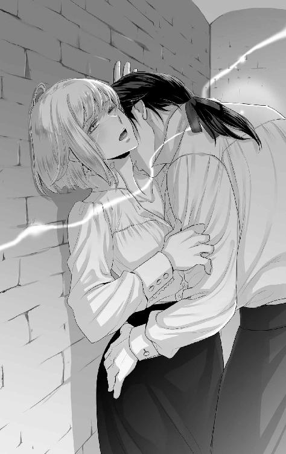
事情はどうであれ、彼に触れられたかったのだとわかると怖かった。抱いてくれる相手なら誰でもよいと思っているような気がして、自分の身体が自分のものではないと感じられた。穢れている。
「君は外の見張りに助けを求めないんですね」
告げて、今度は耳をしゃぶりだす。耳たぶを甘噛みしたり、舐められたりすると身体がビクビクと反応する。体温が上がり、うっすらと汗をかき始めていた。
「そ、それは......」
「僕が君を襲っているところを見張りに見せて捕まえてもらえば、君は二度とここに近づけなくなるでしょう。そうすればいいじゃないですか。僕のことが煩わしいのでしょう？」
問いながら、彼は反対側の耳も舐めしゃぶり、首筋に優しい口づけを落とす。
「やっ......ああっ......」
ジェルトリュドの問いに答えられるほどの理性は残っていなかった。
叫んで、大声で助けを求めることはできたかもしれない。ただ、ジェルトリュドに会いに来たのは話し合いのためであるし、それができないままに引き離されたらわざわざ訪れた意味がない。決着をつけるために来たのに、それが叶わなければこの数日間の苦悩が今後も続くことになってしまう。
しかし、この状況をよしとしてしまうのもいかがなものだろうか。
「......君が何をしにここへ来たのかは察しがついていますよ。僕の呼びかけに応じたからではないことくらいわかっています」
「......え？」
焦点が合わない。ぼんやりとジェルトリュドを見上げると口づけをされて、優しく胸を揉まれた。硬くなりはじめた先端を指で挟まれて揉み込まれると、身体が快感で小さく震える。
「あ、はぁっ......」
自分の吐息が甘い。前よりもずっと感じているのがわかるくらい淫らな声だ。
「こういうことをされたくて来たわけでもないと構えていたのですが、想像以上に簡単に君は落ちてくれたみたいですね。もっと優しく責めて、自分から僕を求めるように調教して差し上げましょうか」
「そ、それは、いや......」
喘ぎ声を我慢して、オデットはジェルトリュドの提案を懸命に拒否する。首を小さく横に振ると、すっかり硬くなった胸の先端をキュッと摘まれた。
「あんっ！」
甲高い声が牢の中に響く。恥ずかしい。ますます体温が上がった。
「そろそろ服を脱がした方がよさそうですね。下着が手遅れになっていないといいのですが」
力が抜けてぐったりとしたオデットの身体を簡単に横抱きにして、牢の奥にあるベッドへと運ぶ。
見た目は華奢なのになぁ。
自分が小柄であることを抜いて考えても、一人の女性をこうして運べる男性という生き物には力では勝てないな、などとどうでもいいことが脳裏をよぎる。そして、シルベストルがロゼリーヌを横抱きにして浴室に向かったのを思い出していた。
「オデット。僕としては従順なのは喜ばしく思えるのですが、もっと抵抗してもいいんですからね。君が僕を恨む気持ちはその程度だったということでしょうか」
ベッドにオデットを降ろすと、ジェルトリュドはかぶさってきた。そうして見下ろす彼は、オデットの知っている彼ならば侮蔑の表情を浮かべているところではないかと思うのだが、今はただ不思議そうな表情を浮かべていた。
「............」
あなたはそういう人物ではないだろうと指摘してやろうかという気持ちもわずかにあったが、結局何も言えなくて顔を背けた。
「君は僕に抱かれに来たんですか？」
牢を訪ねた瞬間にそう尋ねられていたら、すぐに否定の言葉を返していただろう。
だけれど、こうして組み敷かれている状況では、自分がどういうつもりでここに来たのかわからなくなっていた。混乱している。
黙っているオデットの頭を、ジェルトリュドは優しく撫でた。
「なんでも話してくれていいんですよ。知恵なら貸せますし、僕を望むなら気持ちよくして差し上げましょう。できる限りのことはしますよ、君のためなら」
「......ジェルトリュドさまは......」
どうしてあたしのためになどと言うのですか──その台詞が声にならない。口を噤んで、唇を噛む。頭と身体がバラバラになっている。
自分が知っているジェルトリュドと、目の前にいるジェルトリュドは違う人のようだ。本来の彼はどちらなのだろう。演技なのか、本心なのか、よくわからない。
ジェルトリュド派の人たちからの評判を聞いていても、シルベストル国王のような慈愛や優しさのような単語はジェルトリュドの印象からは出てこない。知的で冷静沈着、時には冷酷で、最善であると思われることを成し遂げるためには容赦なく他者を切り捨てるという人物像。ロゼリーヌを殺害しようと考えたのも、そういう面があったからこそだとオデットは考えていた。
シルベストルもジェルトリュドも国を想っていることには大きな違いはない。だが、その取る方法が全く違う。その二つの歯車のおかげでこの国はうまく回っているのだと言っていたのは中立派の人たちだった。
「黙っていてはわかりませんよ。......相手が僕だから言えない、ということはあるのかもしれませんけれどね」
自嘲気味に笑う。どこまでが本心なのだろう。弱みを握るための甘言ではないのか。
どちらにしても、ジェルトリュドの触れる指先や唇はオデットをいたわっていることが伝わってくる。性欲の捌け口として抱いたのなら、あんな触れ方はきっとしない。噂話を聞いていると、そんな気がする。
「......無理やり迫っているのに、乱暴にしようとは思わないんですね」
遠回しな言い方になってしまったが、なんとか言葉にできた。オデットはジェルトリュドをただ見上げる。
「君への感情は愛だろうと思っていますから」
信用されていないと承知しているからだろう。彼は苦笑して言葉を続ける。
「もちろん、慣れないことをしている自覚はありますよ。だから、君を意図せず傷つけてしまっているかもしれないと感じ、常に恐怖を覚えています。僕だって戸惑っているのですよ。寝ても覚めても君のことが浮かぶ。この境遇に落とした君を恨んでいるからではなく、興味を持っているのです」
「そうは言われても、理解できません」
オデットは返す。そして続ける。
「どうせ思惑があるのでしょう？ 嫌がらせじゃないのだとしたら、あたしを落として、あなたにとって邪魔でしかないロゼリーヌさまを消そうって魂胆じゃないの？」
すらすらと言葉を続けることができたのは、彼への不信感が募った結果だろうか。甘い言葉で誘惑されても、そこは流されない。
「最初の動機はそうだったかもしれませんが、今は君のことだけを考えていますよ。あの夜からずっと、君を腕の中に抱いて眠れない寂しさを抱え続けていたのですから」
「そんなの、あたしにはわからない」
「それは挑発だととってよろしいのでしょうか？」
ジェルトリュドの緑色の瞳に欲情の炎が宿ったのに気づいた。オデットの鼓動が跳ねる。それを綺麗だと思ってしまった自分はやっぱりおかしい。
「違う」
オデットの唇から否定の言葉はかろうじて出たが、ジェルトリュドは着ていたシャツを脱いで床に放った。
「話はここまでにして、身体を満たして差し上げましょう。今さら泣いても叫んでも、見張りは来てくれませんよ。君が来たら朝までこの場を離れるように買収しておいたので」
どおりであっさりとジェルトリュドの牢に通してもらえたはずだと、オデットは理解した。そして、この部屋の鍵が開けっ放しになっていたことも頷ける。全部、前もってジェルトリュドが仕組んでいたのだ。
「ま、待ってください。あたし──」
さっきよりも激しい口づけ。噛みつかれたのではないかと焦ったが、唇で挟まれただけで歯は立てられていない。その微妙な刺激が、オデットの中に眠っている官能を呼び覚ます。
「あっ、んっ」
身体の奥底が燃える。口づけだけなのに、気持ちがよかった。
「可愛いオデット。今夜も朝まで付き合ってくださいね。挑発した責任は取っていただきましょう」
「ジェルトリュドさま......」
視界が涙で滲んでいるのは、何も彼が怖かったからではない。あまりの心地よさに身体が震えたせいだ。
「心配しないで。できる限り気持ちよくしてあげますから。その身体に、僕の気持ちを全て刻みましょう」
オデットは自然と頷いていた。ジェルトリュドに身を任せて、溺れたかったから。
あたしの知っているジェルトリュドさまは、偽りの部分だったのかしら。それとも、一部だけだったということなのかしら。
互いに全裸となって重なり合う肌の温もりに、不思議と安堵してしまう。こんなにも人肌というものは心地がよいものかと陶酔する。互いの汗の匂いもどこか淫靡な香りに感じられて、ますますのめり込んでしまう。
気遣うように触れる長い指先も、いたわる気持ちが伝わってくる口づけも、どちらにもたまらなく夢中になっていた。
「んぅっ......」
口づけをされながら、蜜口を指でいじられる。官能を引き出されると、身体は小刻みに震えた。
指だけでは足りない。もっと太いもので満たしてほしい。
「はぁっ......ああっ」
「すっかり慣らされているみたいですね。ヒクヒクとさせて、僕を煽ってくれる」
敏感な突起を指先で潰されて、オデットは腰を浮かせた。ビクビクと腰が揺れる。
「自分で慰めてみたのですか？」
膣の中に沈められていた指が引き抜かれて、ジェルトリュドは意地悪そうな表情で問いかけてきた。彼の指先はランタンの光に照らされててらてらと光っている。
そんなふうになるまで身体を許しているという事実をどこか冷静に認めつつ、彼の問いに体温が上がるのを自覚した。
「............」
自分で慰めていたなどと、そんな恥ずかしいことを素直に言えるはずがない。オデットは小さくにらむ。
ジェルトリュドはそんなオデットをまっすぐに見つめて、くすっと小さく笑った。
「僕がそばにいない間も、僕のことを思い出してくれたんですね。可愛いところがあるじゃないですか」
何も答えていないのに、ジェルトリュドは嬉しそうに告げてオデットの裸身を抱き締めた。触れ合う肌から伝わる体温が心地よい。
「心は許さずとも、身体は本当に素直なんですね。気持ちよくさせることができていたようで安心しました」
「べ、別にあたしは──んぅっ」
口づけの嵐にあって、オデットは言葉を奪われる。唇、頬、額、耳、首筋、鎖骨──どこに触れられても快感が広がっていく。口づけをされるたびに小さな喘ぎ声が漏れて、されるがままにジェルトリュドを受け入れる。身体から力が抜けきっているわけではないのに、彼の行為を止めようと動くことはなかった。
「あぁっ、ジェルトリュド、さま......」
「可愛いオデット。おねだりできたら、もっと満たして差し上げますよ」
そういう台詞を言ってくるあたり、オデットの知っているジェルトリュドだと思う。でも、意地悪はしてきても、罵り蔑むような言葉は出てこない。それが本当に不思議だった。
「......おねだり？」
どういう言葉を告げれば、彼は満たしてくれるのだろう。期待している台詞が浮かばなくて、オデットは首をわずかに傾げた。
「おや、ベッドでどんな言葉を交わすのか、ご存知ないのですか？」
意外そうな顔をされてしまった。だが、馬鹿にされたわけではなさそうだったので、オデットは素直に無知を認める。
「そういう教育は受けなかったので......」
噂話程度なら知っているし、ロゼリーヌとシルベストルの行為を聞かされているのでおおよその状況は想像できる。
しかし、それはそれだ。
オデットはロゼリーヌの側仕えになってからはずっとその仕事だけをしてきたので、同年代の令嬢が受けているような嫁入りに向けた教育を受けていない。実家に戻ることになってからでいいと、先延ばしにしていたのだった。
だから、ジェルトリュドに襲われた時は何が起こるのかよくわからないままに破瓜を経験して、その勢いのままに何度も抱かれたので、男女の営みとはこれほどまでに激しいものなのかと驚いていた。心は混乱し、身体は二日間も寝込まなければならないほどに消耗したことが、一番の発見だった。
「そうでしたか......。処女だと聞いていたのにあまりにもいい反応をされるから、誰かに仕込まれているのだろうと考えていたのですが──なるほど」
「な、なるほどって、どういう意味ですか」
「いえ。それならそれでいいのです」
嬉しそうに笑って、ジェルトリュドはオデットを抱きかかえる。そして、ベッドの端に座ったジェルトリュドの太腿の上にオデットを下ろした。
「あ、あの......」
向き合う形で座っている。オデットはジェルトリュドの太腿をまたぐようにして、全体重を彼に預けていた。まだ、彼を中には挿れていない。
「僕を求めてくださるなら、自分で動いて挿れてみてください。どうすればいいのか、もうわかるでしょう？」
戸惑うオデットに、ジェルトリュドは意地悪そうな笑みを浮かべて指示してくる。オデットはすぐに首を横に振った。切り揃えられた銀髪が左右に揺れる。
「や、嫌です。そんなことはできませんっ」
口ではそう答えたものの、その行為を想像してしまったからか、蜜がじわりと溢れてジェルトリュドの太腿を濡らした。
「では、今夜はこの辺で終わりにしましょうか。あまり身体を酷使してもよくありませんからね。僕の腕の中で休んで、朝日が昇る頃に戻ればいいでしょう」
少し残念そうな表情を浮かべて、ジェルトリュドはオデットの両脇に手を差し込む。身体を持ち上げて移動させられそうになったのを、オデットは彼の脇の下から腕を回して抱き締め、邪魔をした。
「ま、待って」
身体が満たされていない。このままの状態で放置されたら、自分でこの欲求を処理しなくてはならなくなってしまう。その事態は避けたい。
「無理しなくていいのですよ。君はまだ慣れていないのですから」
「......意地悪しないで」
引き離そうとしてくる手を拒んで、オデットは彼に回した自身の腕に力を込める。
「これでも僕は優しい提案をしたつもりなんですよ。前回は僕が主導で強引に抱いてしまいましたからね。今日は君に合わせるのもいいかなと考えたのです。しかし、嫌なら嫌で結構です。君には僕に抱かれる理由がないことですし」
言われてみるとその通りだ。それに無理やり抱かれたのだという主張を今後も続けるのなら、ここで引いてもらった方がいいはずである。
あたしは何をやっているんだろう。
与えられる快楽に溺れている自覚はある。彼を求めていたのだということも、認めたつもりだ。
つまり、あたしは自分の性欲を満たすために彼を利用している？
こういう状況にならなければ、ジェルトリュドは自分を抱かなかっただろう──そう思うからこそ、利用しているのではあるまいか。
「............」
何か言おうと思って口を開くが声が出ない。
なんて浅ましい考えなのだろう。
オデットは彼に抱きついていた腕を解いて、静かに俯く。
「......ジェルトリュドさまは、あたしがこの状況を利用してあなたに近づいているのだと感じたら、呆れてあたしを捨てますか？」
「捨てる？」
オデットのつぶやきに、ジェルトリュドは優しい声で聞き返す。
「他の女性にしてきたみたいに、ひどいことをするのかってことです」
侯爵令嬢を怒らせたという話を思い出す。その他の泣かされてきた女性たちのことも。
淡々とした声で問うと、ジェルトリュドはぷっと小さく吹き出して笑った。
「な、なんで笑うんですかっ！」
納得ができなくてジェルトリュドを正面から見ると、彼の手がオデットの後頭部を押さえて口づけしてきた。唇を唇で包まれて、間もなく互いの舌が絡まり始める。逃げ出そうとすれば、彼はしっかりと押さえて逃げ場をふさぐ。苦しくなるほどの激しい口づけは、やがてオデットから逃げる気力を失わせた。
「んんぅっ......」
身体の力が抜けてぐったりするオデットをジェルトリュドは両腕でしっかりと支えて妖艶に微笑む。
「君へはたくさんの愛情を注ぐつもりですよ。──そうですね、君は口の悪い僕を知っているわけですから、あえてこういう言い方をしておきましょうか」
もったいぶった台詞を吐くと、オデットの耳元に唇を近づけた。そして甘い声で囁く。
「君が僕に向けた憎悪の分だけ愛情で返す方が、復讐としては面白いでしょう？」
その声に、オデットはゾクッとした。艶やかさとおぞましさが共存する声。誘惑と狂気の両方を感じ、これこそがジェルトリュドの本心のように思えた。
ジェルトリュドはオデットの耳元でクスクスと笑い、オデットの首筋に吸いついた。チクリとした痛みが、甘い痺れを引き出す。
「あ、んっ」
言葉にならない。彼が与えてくれる刺激を全て受け止めるために、思考が停止してしまっているようだ。
「僕は君を愛します。僕が今まで抱いた女性たちのような振る舞いをしても、君を手放そうとは思わないでしょう。それは君に復讐をしたいからではありません」
目を合わせられた。偽りなど感じられない緑色の瞳がオデットを映す。
「オデット、君は僕が求めていたものを持っているのですよ。だから、君が欲しい」
「............」
現実味を感じられなかった。どこか意識がふわふわと漂ってしまっていて、夢の中のように思えたからだ。
「それが......勘違いだったら......？」
わずかにある不安な気持ちが自然と言葉になる。絶対に交わることなどなかった相手に言い寄られているらしいということが、やはり理解できない。
だから余計に怖かった。ジェルトリュドの目的はなんなのだろう。幽閉される身となったことを恨んで、こんな甘美な復讐を実行しているという発言が真実ではないのか。
あたしは溺れたままでいいの？
二人きりで話すのでは、やはり真実が見えてこない。オデットの知っている彼は、他人を謀り騙すための演技など造作もない。そうやって人を動かし、利用し、自分の身を守ってきた人。
オデットがそんな彼の綻びを見つけられたのは、オデットが隣国からやってきた人物であり、もともと自身に後ろめたいことがなく、ゆするだけの情報をジェルトリュドに与える前に決着することができたからにすぎない。
実際、彼はオデットの身辺を調べていたらしい発言をしている。右腕の火傷のことは黙ったままこの王宮に入ったというのに知っていた。この怪我や髪を切った理由は、ずっとそばにいたロゼリーヌしか知らない情報のはずだ。味方につけるために嗅ぎ回っていただろうことはそんなことからも想像できる。さらに長期化していた場合、おそらくジェルトリュドとの直接対決が待ち構えていたことだろう。
ジェルトリュドは安心させるような笑みを浮かべた。
「僕が勘違いをすることはありませんよ。君は僕が伴侶に求める一番重要なものを持っている。それは簡単に失われるようなものではありませんから、心配しなくていいですよ」
「そう言って、あたしを利用して、いつか裏切るのでしょう？」
きちんと思考できないままに、不安な気持ちが言葉を紡ぐ。自信のなさの表れだった。
ロゼリーヌは褒めてくれるが、容姿には自信がない。彼女ほど恵まれた体型ではないし、サラサラの銀髪だってもっと綺麗な髪色の少女はたくさんいる。
身分は一応伯爵令嬢ではあるが、それほど多くの収入がある家柄ではないし、そもそも兄と姉がいて末っ子のため、家督を継ぐこともない。侍女の仕事を解雇されれば、お見合いという名の政略結婚をして子どもを産み、死んでいく人生が待っているだけ。
そのくらいの価値しか自分にはないわけで、ジェルトリュドが求めているものがなんなのか余計に理解できない。彼が蔑む女性たちと違いがあるようには思えないのだ。
「裏切るかどうかは、僕と付き合ってみればわかりますよ」
意味ありげに口の端が上がる。
「誘惑しているつもりですか？」
「誘惑しなくても、君はもう僕の虜でしょう？」
オデットはジェルトリュドの問いに言葉では答えなかった。
ゆっくりと腰を浮かせ、右手で彼の屹立を支える。想像よりも熱くて硬い。オデットはごくりと唾液を飲み込み、そっと股間を寄せるとそのまま下ろした。濡れた蜜口から熱棒がするりと入ってくる。
「んんっ......」
苦しい。しかし一方では、中が満たされたことによる興奮で膣壁がざわつくのを感じていた。この質量をずっと求めていたのだと自覚する。
「オデット、君はずいぶんと大胆なことをするのですね」
きゅっと中が締まったからだろう。ジェルトリュドは少し苦しげに顔を歪めて告げる。そんな彼の声は熱っぽい。
「しろって言ったのは、はぁ、ジェルトリュドさまじゃないですか」
まだまだ蜜口の先は狭い。ぐっと押し込まれると窮屈で、とても動けるような余裕があるようには感じられなかった。
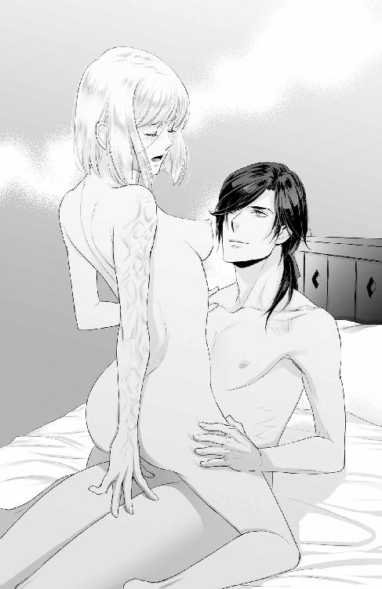
この状態のままでもよかったが、ジェルトリュドを導いて、より奥を突かないと気持ちよくはならないと知っている。とはいえ、全体重を彼に預けるのは心もとなく、膝をベッドに引っ掛けるようにして身体を支える。さらに腕を彼の首に回し、落下しないように注意した。
でも、これで本当に動けるの？
苦しいけれど、身体が満たされて悦んでいるのがわかる。貪欲にその先の快楽を求めていることも。
「無理はしなくていいんですよ。ゆっくり時間をかけましょう。負担を強いたくないのです」
ジェルトリュドは優しげに微笑んで、オデットの唇をふさいだ。軽く喰まれると全身に甘い痺れが広がって、膣が動くのがわかる。
「あっ......」
身じろぎすると同時に、奥へと熱棒が進んだ。少し痛みはあるが、あの夜ほどではない。
「オデット......君の中はとても熱いですね。気持ちがいい」
「ジェルトリュドさまのも......熱いです......」
灼熱の杭が差し込まれているみたいな感覚だ。体重をかけてしまう体勢であるからか、少し動くだけで熱棒は奥に突き進んでくる。
「あまり煽るようなことを言うと、優しくできなくなりますよ？」
首筋に口づけを受けると、さらに奥に彼が入ってきた。身体から余分な力が抜けたからだ。
「やぁっ......ジェルトリュドさまは、あっ、もともと優しくなんて......はぁ......ないじゃないですかっ」
彼が自分を抱くときにどれほど優しくしようと考えて触れてくれているのかは想像できる。かなり気を遣っているはずだ。らしくないことをしようと、注意深く接していることは伝わってきている。
だが、そのらしくない行為がオデットには不可解で、ついそんな言葉を口走っていた。
ジェルトリュドが笑う。
「僕は優しくもできるんですよ？ 周りがそれを許さなかっただけなんですから」
言葉とは裏腹に、彼はずんと腰を突き上げた。
「あぁんっ」
ぐっと奥に入り込む。一気に最奥を突かれて、オデットの視界が白く弾ける。
力が抜けた身体をジェルトリュドは支えて抱き寄せ、耳元で囁く。
「君はまだ何も知らない。その上、僕の本性を知ろうとも思っていないでしょう？ だから、僕からは教えませんよ。互いに心を開く準備ができたら......そんな日がくればいいですね」
抱き締めて、再度腰を突き上げる。
オデットはジェルトリュドをただ受け入れた。甘い声がこぼれる。気持ちがいい。
「オデット......愛してる......」
口づけをされて、身体の向きを変えられる。身体は繋がったままベッドに寝かされて、それを認識すると同時に激しく中を穿たれる。何度も抽挿を繰り返すうちに身体が徐々に開かれて、肉棒に絡む蜜がぐちゅぐちゅといやらしい水音を立てた。
「ああっ！」
声を上げるのは恥ずかしいなどと我慢していられたのは最初だけで、オデットは感じるままに声を上げる。その方が気持ちがよかったし、ジェルトリュドが声に合わせてより快感を生む刺激に変えてくれるのがわかって、声を出さないわけにはいかなくなったのだ。
「オデット......っ」
「ジェルトリュド、さま......っ」
名を呼んだのが合図になったのだろうか。彼の肉棒が膨張したのを感じ、熱が最奥に浴びせられるのがわかった。
「んんっ......」
ビクッとオデットの身体が反応する。気が遠くなるほどではなかったが、ジェルトリュドの熱を受けて小さく達したらしかった。
「......本当に、君の身体は僕に従順なんですね」
汗でくっついた前髪を払うと、ジェルトリュドは額に唇を落とした。
「し、しかたがないでしょっ！ 全部あなたがあたしに教えたから──んぅ......」
唇を唇でふさがれる。角度を変えて何度も唇を合わせ、どちらからともわからずに舌を絡める。オデットの身体はビクビクと快感に揺れた。
「君がこの行為を気に入ってくれているようで本当によかった......。間違いじゃなかったって、君を見ていると肯定できるから」
嬉しそうに微笑まれると、目の前の人間が誰なのかがわからなくなる。冷たく人を見下すような目で見るジェルトリュドはどこに行ってしまったのだろうか。
「ジェルトリュドさま......」
名を呼んでみてもわからない。この人は誰なのだろう。
「可愛いオデット。どうか、僕を──」
台詞が最後まで聞こえない。強烈な睡魔にオデットの意識は連れ去られていたのだった。
彼の腕の中は居心地がいい。オデットが目を覚ますと、ジェルトリュドの寝顔が目に入った。穏やかな表情で気持ちよさそうな寝息を立てている。
ジェルトリュドさま......。
もはや彼を殺そうとは考えなかった。無防備に眠る彼を見て、どこか気持ちが安らぐのを感じ、自分はどうかしているとも思う。
あたしのどこがいいんだろう？
貧相な身体が好みなのだろうか。ひたすら優しく触れてくるのは、小柄で壊れやすそうに感じるからだろうか。
魅力はないと思うけどなぁ。ジェルトリュドさまが考えているほどあたしは頭がいいわけじゃないし。こういう行為の飲み込みがいいのを、評価しているのかしら？
不思議でしかたがない。初めての行為に戸惑って、かなり激しいことをされたように感じていた。しかし、自分が夢中になってしまっていることを考えると大したことではなさそうだとも思えてくる。
ジェルトリュドさまの気持ちはよくわからないけれど、少なくともこれはいけないことよね......。
あってはならないことだ。処女を失ったということは、結婚もしにくくなる。この国の男性の全てがそういう嗜好なのかは不明だが、少なくともオデットが生まれ育った国ではそのように言われている。だから処女の身体は大事にしなくてはならないと聞かされてきた。
失ってしまったものは取り戻せないし、嘆いても始まらないわ。いっそのこと、このかりそめの時を楽しんでしまうのもいいけれど、罪を重ねることになるのかしら？
ジェルトリュドを好きになるわけがない。でも、抱かれている時は憎む気持ちは微塵も湧いてこなかった。また、囁かれる愛の言葉は悪くない。そこに気持ちを感じなくても。
本当に、壊れるような抱き方をしてきていたら、こんなややこしい感情を抱かなくて済んだのに。
そういうところは意地悪だと思う。
眠るジェルトリュドの頬に手を置いて、そっと自分から口づけをする。起こさないようにと軽く触れただけのつもりだったのに、離れた時には彼の緑色の瞳が驚きでまんまるくなっていた。
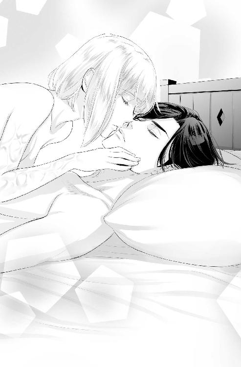
「ご、ごめんなさい。起こすつもりはなくって......その、出来心みたいなもので......」
見つめられると恥ずかしくなってくる。顔が真っ赤になっていることだろう。
慌てるオデットを、ジェルトリュドは穏やかな笑顔を作って抱き寄せた。
「ずいぶんと可愛らしい悪戯をするのですね。そんなに僕が愛おしいですか？」
「ち、違うの。これは、そういうんじゃなくって──あんっ」
髪を撫でられたのかと思ったら、それが目的だったわけではなかったらしい。切り揃えられた銀髪を除けて露出させた耳を、ジェルトリュドは甘噛みしてきた。
「まだ朝まで時間があるようですし、もっと愛してあげましょうか？ たくさんの愛の形があるそうですから、一つ一つ試すのも悪くないかと」
「い、いえっ。結構です！ ちゃんと休まないといけないって提案してきたのはジェルトリュドさまじゃないですかっ！」
身じろぎしながら抗議すると、ジェルトリュドはくすくすと小さく笑う。
「それはそうですけれど、まだ体力が残っているなと思いまして。ここで手放したら、次の機会は来ないかもしれないと考えると、惜しくなるではありませんか。そういうものでしょう？」
確認するように、ジェルトリュドの手がオデットの柔らかな茂みを撫でて割れ目に侵入してくる。
「ちょっ、やっ」
「どこが嫌なんです？ 潤ってきているのに」
彼が指摘するように、そこは充分に潤っていた。身体が続きを期待している。
「これは、その......そういうんじゃなくって......でも、あの、もしそうなら、呆れませんか？ こんな身体、いやらしいですよね」
手から逃れられない。ほぐされている膣内に彼の指はすんなりと入ってきた。中までよく濡れている証拠だ。
自分の身体の反応に戸惑って、気持ちのままに尋ねると、ジェルトリュドは首を横に振った。
「君なら許せますよ。否定することはない。誰が相手でもこうなるとなれば、話は変わりますけどね」
「あっ......」
差し込まれていた指が折り曲げられて、敏感な場所を押される。鋭い快感に、ビクッと身体が反応した。
「僕に身体を委ねて、気持ちよくなることに専念するのは悪くない」
「あ、んっ、だ、ダメっ、そこは──」
逃すまいと、ジェルトリュドはオデットを下敷きにするように陣取って、なおもオデットの弱い場所を指で押し続けた。
「やっ、......はぁ、おかしくなっちゃう、からっ」
彼の身体を押し退けようとするが、全然びくともしない。想像よりも胸板にはしっかり弾力があって、そんな些細なことに驚いている場合じゃないと思いながらも意識に深く刻まれる。
「おかしくなる君を見てみたい」
「んんっ」
刺激に必死に耐えていたが、抗いきれなかった。嬌声を上げて、オデットは身体をしならせた。全身から汗が噴き出し、呼吸が荒くなる。
「ジェルトリュドさま......はぁ......ダメって言ったのに......」
恨めしい気持ちを乗せた視線をジェルトリュドに向けると、満足そうな表情でオデットを見つめる視線とぶつかった。
「とっても可愛い反応じゃないですか。演技ではないのでしょう？」
「なっ......演技に決まっているじゃないですかっ！ どうしてあれで感じて──あ、やっ、触んな、いでっ！」
指がまだ引き抜かれていないということを失念していた。再び同じ場所をいじられて、オデットは焦る。
「抵抗できるならすればいい。意識が飛ぶほどの快楽を刻んであげた方がよろしいですかね？」
意地悪なジェルトリュドがそこにいる。愉快げに笑っているのを見ると、それは彼らしいかなと思えて、妙な安心感があった。
「い、嫌がる演技が、はぁ、必要であれば......そうしますけど？」
「本当に君は可愛いですね」
ちゅっと口づけをして、ジェルトリュドは微笑む。
「お好きなようにどうぞ。ただし、演技ができるのでしたら」
「やぁんっ！」
さっきよりも強い刺激に、オデットの頭の中は真っ白になった。ジェルトリュドの笑い声が聞こえる。
「忘れられない快感を刻みつけておきますね」
指だけの刺激にオデットはのめり込んでいく。抗う気持ちなど、一瞬で吹き飛んでいた。身体をくねらせながら、官能の渦に意識はのまれてしまう──。
少し眠っては身体を重ねての繰り返しで、明け方を迎えてしまった。こんなはずではと思う一方で、心も身体も満たされている自分をオデットは意識する。
肌の触れ合いでこんなに安堵するなんて。
憎むべき相手なのに、どうしてこんな気持ちになってしまうのだろう。
「オデット。そろそろ時間ですね」
身なりを整えたジェルトリュドが寂しげに告げる。
「そうですね......」
オデットも服を着込んで、自分の部屋に戻る準備を整えていた。腰に鈍い痛みを残しているが、寝込まないといけないような激しいものではない。仕事に差し支えはないだろう。
「寂しくなったらいつでも来てくださいね。身の危険を感じることがあった時も、相談をしに来てください。王宮を出入りしている人間の弱みはほとんど手中に収めていますから」
「......身の危険を一番感じるのはあなただし、弱みを握っているってのを自慢されるのもどうかと思うのですが」
彼らしい台詞だが、オデットは呆れた声で指摘してやる。
ジェルトリュドは肩を竦めた。
「僕は心配をしているのですよ。おそらく、僕と君がこういう間柄になるのをよく思わない人間が大多数でしょう。今は一応、幽閉中の身ですから、君のそばで守ってあげることができません。知恵を貸すくらいしか、力になれないのです。でも、それを無力だとは思わない。君が相談してくれるなら、ですけどね」
「......ほんと、ジェルトリュドさまは──」
言葉を飲み込んで、オデットはクスッと笑う。頭脳にずいぶんと自信があるんだなと思うと、笑えてきてしまった。標的を騙したり謀ったりするのが得意で、好きなのだろう。嫌な趣味だが、味方にするには悪くない。
「なんですか？」
「いえ。──まだ嫌がらせ程度ですけれど、王宮内で働く使用人の皆さんを敵に回してしまったように感じてはいます。あたし自身も説明しにくくて......別に恋仲ではないですし」
この関係を表す適当な言葉が浮かばない。身体だけの関係だと言い切るには、自分の中の倫理観に触れてしまい、どうにもしっくりとこない。
「恋仲だと言ってやればいいじゃないですか」
ジェルトリュドが冗談めかして言うので、オデットは彼の胸を叩いた。
「あたしに死んでこいと言うんですかっ！ あなた、ご自分がどれだけの人間に注目されているのかわかっていないでしょう？ 信じられない」
非難してやる。何かきっと腹の立つような言葉で言い返してくるだろうと構えていると──。
「......僕は死ぬことは怖くないですから」
「え？」
ぼそりとつぶやかれた言葉に、オデットは顔を上げてジェルトリュドの顔を覗き込む。その瞬間に口づけをされた。
「んっ！」
しっかりと頭を固定されて、呼吸ができなくなるくらいの深い口づけを交わす。舌が絡まり、互いを求めるようにすり合わせ、別れを惜しむように唾液の糸を引かせながら唇が離れた。
「──君にいくつか助言をしておきます。これを覚えていれば、窮地を乗り切れるでしょう。もし、僕が想定するような事態に遭遇した時は必ず報告してください。僕が、君の身を守ります」
告げるジェルトリュドの瞳はまっすぐで、本気でオデットの身を案じていることが伝わってきた。
「わ......わかりました」
そして、オデットは彼の話に耳を傾ける。
ジェルトリュドが何を想像しているのかすぐにはわからなかった。だが、彼の説明と助言をもらううちに、何が起こる可能性があるのか見えてくる。さすがはこの王宮で生まれ育っただけはあるというべきか。丁寧に説明されると、それが現実に起こりそうで背筋が凍る。
「──以上です。君なら全部覚えられると思って伝えましたが......気になることがあればすぐに連絡してくださいね」
「わかりました」
考え方によってはジェルトリュドが裏からそうなるように仕向けている可能性はある。オデットがこの牢に足を運びやすいように。だが、そういう推理はひとまず置いておくとして、今は彼の話を信じてみようと思った。痛い目には遭いたくないし、ロゼリーヌに迷惑をかけたくない。
「気をつけて、オデット。僕は君を心から愛しています」
ジェルトリュドが優しく微笑んでくるのを見て、オデットは頬に熱が宿るのを感じた。今まではなかった反応だ。
な、なんであたし......。
恋愛の対象として意識し始めているらしい反応に戸惑って、オデットはくるりと身体の向きを変えた。
「き......気が向いたら、また来ます」
急いで部屋に戻らなければと自分に言い聞かせて、オデットは牢の扉をくぐったのだった。
そんなすぐに過激になるとは考えていなかった。でも、楽観視しすぎていたことがその日のうちにわかる。
午前の仕事が概ね片付いて、次の仕事の準備のために廊下を移動していた時だった。背後から近づいてきた王宮内の警備をしているらしい騎士に呼び止められる。
「──厩舎でシルベストルさまが呼んでいらっしゃるって？ あらそんなはずはないわ。あたし、シルベストルさまから先ほど仰せつかった仕事の最中ですもの」
ジェルトリュドが助言してくれたように、オデットは声をかけてきた騎士に何食わぬ顔で返答する。
つまり、返答の内容は嘘だ。使用人ではない彼がシルベストルの今日の公務を完全に把握していないから使える手段である。
なおもごねて喰い下がる騎士に、オデットはにこやかに続ける。
「あたし、知っているんですよ。そこが騎士の人たちと使用人たちの逢瀬の場になっているって」
彼が怯んだのがわかった。オデットはさらに言葉を足す。
「あぁ、逢瀬と濁しましたけど、つまりは男女、それも複数人で真っ昼間から言えないようなことをなさっているそうですね。合意の上とはいえ、風紀が乱れるのはよろしくないと思うのですけど。シルベストルさまはご存知なのかしら？」
これで無理やり連れ去るような強引な手段に出られた場合は覚悟を決めるしかない。殺されることさえなければ、このことをシルベストルやロゼリーヌに告げるだけである。
騎士は顔を歪めて、オデットに手を伸ばす。力ずくでことに及ぶことにしたようだ。
実は、この騎士の目的は自分に乱暴しようと考えているということか。
腕を掴まれそうになったとき、ちょうどこの廊下へと出てきたロゼリーヌと目が合う。
「オデット。よかったわ、ここで会えて」
穏やかな笑顔でロゼリーヌが近づいてくる。騎士は誰がやってきたのか声でわかったらしく、手を引っ込めると何も告げずに歩いて行ってしまう。
「何か用事でしょうか？」
騎士の姿はもうない。都合が悪くて立ち去ったということだろう。
「あなたたち、何か話していたところのように見えたけれど、よかったの？」
心配そうにロゼリーヌは告げて、騎士が立ち去った方向をじっと見つめている。邪魔をしてしまったと考えたのだろう。
「いえ。ちょっとした雑談ですよ。気になさらないでください」
オデットは努めて笑顔を作り、ロゼリーヌに答える。気のいいロゼリーヌのことだ、このことを相談したらオデットの身を心配し、協力しようとするだろう。
だからこそ、自分でどうにかしようとオデットは考えた。ロゼリーヌには彼女自身のことと国のことに専念してほしい。できる限り早く元気な子を産んで、落ち着いた生活をしてほしいと願う。それが、ロゼリーヌが国民から求められている仕事だ。
「そう？ それならいいのだけど」
納得できないという顔をロゼリーヌはしたが、オデットが話を促したのでそれ以上は追及してこなかった。
午後も午後で様々な使用人たちから嫌がらせを受けた。
庭に出ればこの真冬に水をかけられてずぶ濡れになるし、掃除中の現場に近づけば物が倒れてくるなどしたが、大きな怪我はせずに済んだ。こんな状況ではあるが、運はいいらしい。危害を加えようとしてくるのは、たいていジェルトリュド派の使用人たちだ。
一方、シルベストル派からは嫌みをたくさんぶつけられた。しかし、そういう時はジェルトリュドが教えてくれた弱みをチラつかせて追い払う。魔除けの呪文のごとく、それは効果的に作用してくれた。嫌な女になりつつあるが、黙ってやり過ごすようなことを好まないのがオデットだ。そこはもう開き直ることにした。こうなってしまったら仕方がない。選べる手段は少なかった。
オデットが嫌がらせを受けるようになってから数日が経過した。あの手この手でオデットをいじめてやろうとしているのがよくわかったが、オデットは決して挫けなかった。
そんな中、気づいたことがある。
どうも使用人たちには鬱憤がたまっているらしい。その捌け口として利用されているらしいこともだんだんと見えてきた。もしかしたら、ロゼリーヌ暗殺を指示したジェルトリュドに協力しようと動いた人間が内部にいたのも、ロゼリーヌが外の人間だったからなのかもしれない。そういう方法で発散するのは決して褒められたことではないが、それだけ彼らの心は歪んでいる部分を持つということだろう。今後は何か対策が必要になるかもしれない。
オデットは今日もジェルトリュドのいる牢に出向いていた。あれから毎晩ここに通って一日の出来事を報告し、身体を重ねていた。
「あぁ......んっ......」
寝そべるジェルトリュドの上にまたがり、オデットはゆっくりと腰を下ろして身体を繋げた。彼の熱を体内を通じて感じると、気持ちが高揚してくる。
「今日はずいぶんと積極的ですね」
汗ばむオデットの頬を優しく撫でて、ジェルトリュドは微笑む。
「やれって言ったのは......あっ......ジェルトリュドさまじゃ、ないですか......」
自分から進んで身体を繋げるなんて恥ずかしい。でも、焦らされたくなくて言われたとおりにしてしまった。羞恥の感情が、膣をキュッと締める。
「嫌がる君を見て楽しもうと思っていたのですが、アテが外れました」
そんなことを告げてくるが、声には残念そうな気配はない。これはこれでよいと肯定しているように聞こえる。
「このあとは......？」
自分の体重で、思った以上に深いところまで穿たれている。ここから上下に動くのがいいのだろうか。
オデットが訊ねると、ジェルトリュドは頬を撫でていた手をこぢんまりとした胸に伸ばした。ツンと勃ち上がった胸の先端を擦るように撫でられると、オデットは快感に身悶える。
「動けるのであれば、しごくように身体を上下、もしくは前後に動いてほしいのですが」
無理でしょうねというニュアンスがこもった言い方をされて、オデットはかえってやる気になった。
「わか......りました。上手にできたら、褒めてくださいよ？」
オデットはおそるおそる身体を動かす。その度に結合部からぐちゅぐちゅという卑猥な水音が響いて、オデットの意識を興奮へと導く。
「あぁっ......」
淫らなことを率先してやっていることに対して様々な感情が湧いては、快感に勝てずに消えていく。熱棒が抜けそうになったところで一気に奥まで咥え込むと、最奥を適度に刺激して視界がチカチカと光った。
「オデット......くっ......」
「ジェルトリュドさまぁ」
達したせいか、疲労のせいなのか、身体から力が抜けそうになったところで彼に支えられる。そして二人の位置が入れ替わった。
「そんなに必死にならなくても......はぁ......僕は充分に気持ちいいですよ」
切なげな表情で見下ろしてくるジェルトリュドに、オデットは熱っぽい視線を向ける。
「別に......あたしは、ジェルトリュドさまのために......しているわけじゃ──」
否定の言葉を続ける前に唇をふさがれてしまった。舌が絡まり、熱を交換する。膣がキュッと締まるのを感じると同時に、彼の腰が動き始める。
「んんっ......」
グリグリと奥を責められると身体がつい跳ねてしまう。ジェルトリュドは丁寧に、しかし時として激しくオデットを穿ち、互いが充分に高まったところで熱を放った。
「ぐっ......」
「あぁっ！」
こんなに毎日体内に精を放たれていたら、子を宿してしまうかもしれない。
一瞬だけよぎった不安は、ジェルトリュドからの口づけの嵐にあって霧散する。
「可愛いオデット......。ずっと、僕だけのものでいてほしい」
火傷の跡が残る右腕を持ち上げると、その引きつった肌により優しく口づけをした。左腕にされたときよりもくすぐったくて、しかし心地もよかった。オデットは小さく身悶えする。
「この牢から出られることがあったら、僕は君を妻に迎えたい。君しか考えられない。愛している......オデット......」
横になってぎゅっと抱き締められる。その肌の温もりに安堵して、オデットは彼の言葉に答えられないまま眠りに落ちる。
第三章 本音と建前
毎晩抱かれているからか、少しだけ身体がだるい。ロゼリーヌも毎日のようにシルベストルから身体を求められているのを思うと、それはそれで体力がないと大変だな──などとオデットは思う。
艶やかなロゼリーヌの赤い髪をいつものようにすいてまとめながら考えることではないとわかっている。だが、彼女が元気そうにしているのを見ていると嫉妬のようなものと同情らしいものがふっと湧くのだった。
愛されるっていいな......。
ジェルトリュドは身体を重ねるたびに愛の言葉をかけてくれるが、やはりオデットはそれを受け入れられない。約束された関係ではないということもあるのだろう。一線を越えてしまったのに、心はどうにも通わせることができているようには思えなかった。
「ねぇ、オデット。疲れた表情をしている割には肌が綺麗な気がするのだけれど、何か始めたのかしら？」
髪を整え終えたロゼリーヌが無邪気に問いかけてきた。オデットには思い当たる節があるが、すぐに答えられない。
まさか、ジェルトリュドさまに抱かれているからとは言えないし......。
牢に通っていることは誰にも内緒だ。牢の番をしている騎士たちは察していることだろうけれど、それを口外するような無謀なことは考えまい。ジェルトリュドがしっかり握っている。今のところ牢の出入りの際には誰にも会っていないので、噂程度しか話は広まっていないだろう。
「......おそらく、ここでの仕事に慣れてきたからではないかと。気持ちに余裕があるから」
オデットはにっこりと笑ってロゼリーヌに返す。鏡に映る自分の姿を見ても、うまくはぐらかせているように感じられた。
「そう。残念。何か美容にいいことを始めたのかと思ったのに。最近のあなた、とっても綺麗よ」
心底がっかりとした表情でロゼリーヌが言うので、少し胸が痛む。親友に黙っているというのは、想像していたよりもツラい。彼女が何でも打ち明けてくれていただけに、なおさら。
「ありがとうございます。そういうことでしたら、きっとロゼリーヌさまから分けていただいた化粧品が肌に合うのでしょうね」
「それならよかったわ。わたくしが気に入っているとどこからか聞きつけたらしくて、また届けてくれるそうよ。一人じゃ使い切れないから、オデットに分けてあげるわね」
「本当に？ 嬉しいです」
コロコロとよく表情が変わる人だ。そんな彼女を素敵だと思う。
オデットの前でロゼリーヌはこうして自然に振る舞うが、やはり一国の姫だ。公務の時には気を引き締めて対応し、よそ行きの笑顔を振り撒いて国民が憧れるような王妃を演じる。だから、こうして素を出せる人をそばに置きたいと考えるのだろう。
「そうそう。オデット、あなた、お見合いをする気はない？」
「え？」
櫛や飾りを片付けていた手が止まる。鏡の向こうにいるロゼリーヌを見て、そして自分がとても驚いた表情を浮かべているのが目に入った。
「このまま側仕えとして働いてもらうのももちろんいいのだけれど、あなただって年頃の女性でしょう？ わたくしのせいで婚期を逃したなんてことになるのは悪いかなって」
戯れで言っているわけではないとすぐにわかってしまった。長年彼女に仕えてきたからだろう。ロゼリーヌはオデットの将来を案じている。
なんて答えれば......。
オデットは迷った。すると昨夜、ジェルトリュドから右腕の火傷の痕に口づけされたのを思い出して、肌がピリッと引きつる。
「で、ですけど......あたし、身体に大きな火傷の痕があるから、もらい手もつかないと思いますけど」
身体に傷のある女など嫌ではないだろうか。肌は白くて透き通っているようなのが望ましいと言われているのに、この引きつった肌を見せられたらきっとよく思わない。
「そんな見た目を気にするような男に嫁がなければいいのよ。あなたは充分に魅力的な女性だわ。仕事もよくできるし、貴族や高官の妻としても立派にやっていけるってわたくしは思っているのよ」
ロゼリーヌが評価してくれるのはとても嬉しいしありがたい。
しかし、火傷の痕だけでなく、純潔を失ってしまっていることも気がかりだ。
結婚を考えるなら、この提案を受けるのが一番いいのに......。
王弟であるジェルトリュドに自分は相応しくない。彼がどんなに愛の言葉を与えてくれようとも、戯れだったと覆される可能性は捨てきれないのだ。ジェルトリュドを信じて、牢から出てくる日を待とうとは思えなかった。
「あたし......ロゼリーヌさまが思っているほど、優秀じゃないですよ」
謙遜のつもりで言ったわけではなかった。これは本音だ。ジェルトリュドも自分を高く評価していたように感じられるが、それも買いかぶりだと思う。彼らの評価や期待が重圧になる。
「そんなことはないわ。わたくしの命を守ってくれたのもあなたじゃない」
まぶしすぎる笑顔が自分のために向けられていると思うと心苦しい。彼女は無邪気だ。本当にそう信じているのだろう。嫁入り先までついてきた親友のことを。
「あんまり褒めないでください」
返して、オデットは小さく「お見合いかぁ......」とつぶやく。ここでそんな話を持ちかけられるとは予想していなかった。そのためにかなり動揺してしまったが、どう答えるべきなのだろうか。
「前向きに考えてね」
「はい......検討してみます」
ロゼリーヌはオデットの返事に楽しそうに微笑む。きっとどこかからよさそうな縁談を持ちかけられたのだろう。彼女がやる気になっているのを感じて、オデットは憂鬱な気持ちになった。
お見合いを勧められたことがずいぶんと気にかかっていたらしい。
オデットはぼんやりしていたせいで、昼食中にジェルトリュド派の侍女から熱いスープを引っかけられた。避けきれなかったために、ブラウスの右腕のあたりを野菜たっぷりのスープが濡らす。
このくらい、あの時の炎と比べたらどうってことないわ。
怒りを侍女にぶつけてもよかった。しかし、どこか頭の中がひんやりとしていて、オデットは無言で立ち上がると処置室に向かって歩き出す。食事が中途半端だが、もう食欲もない。誰にも見られないように火傷の処置をしようと思った。
処置室でブラウスを脱いで手当てを済ませる。思ったよりも大したことはなかったらしく、水で冷やせばそれで充分だった。
なにやっているんだろう、あたし......。
ロゼリーヌに恥をかかせることになるかもしれないが、お見合いは受けておいた方がいいだろう。相手が気に入ってくれるようであれば、結婚することも悪くはない。そうすれば、ジェルトリュドへのよくわからない気持ちを捨てて新しい生活を始められるかもしれない。
今のままではいけないということは充分に承知しているはずなのに、それをやめることができないのだ。だったら潔く、やめざるをえない環境に身を置くのが手っ取り早いだろう。彼との行為にふけってしまっているが、依存すべきではないのは明らかだ。精神的にも物理的にも距離を置かないと。
いい加減に仕事に戻ろうと思って立ち上がった時、処置室に一人の女性が入ってきた。オデットは身構えるが、短い黒髪が見えてその人物が誰なのかすぐに理解した。テレーズだ。
「オデット。ずいぶんとひどい顔をしているけれど、大丈夫なの？」
心配そうに覗き込んできて、オデットの頬を撫でる。それで自分が涙を流していたのだと知った。
「そんなに火傷が痛むの？ お医者様に見てもらった方が──」
「心配いりません」
スープをかぶったところを見ていたのだろう。テレーズが右腕に手を伸ばしてきたのを軽く払い、毅然とした態度で答える。
「少し赤くなってしまいましたが、すぐに治りますよ。心配して来てくれたんですか？」
オデットが問うと、テレーズは困ったように笑った。
「えぇ。みんなにももうやめるように言ったんだけれど、なかなかわかってもらえないみたいね。シルベストルさまやロゼリーヌさまにも相談したのだけれど......」
「相談......したんですか......」
目を大きく見開いていたことだろう。ロゼリーヌのあの提案は、きっとオデットのこの状況を案じ、今の環境から引き離そうと考えたからに違いないと確信する。
「わたしだけでは手に負えそうになかったから。だって、こんなのおかしいでしょう？」
テレーズも自分の正義を持っている人だ。お節介かもしれないと思いつつも、何もしないよりはマシだと動いてくれたのだろう。
こんなことで、あたしは追い出されてしまうんだ。
情けなく感じた。もっと反撃をすべきだったのだろうか。あたしを攻撃するヤツには容赦しない、とはっきり明言して。
ううん。違う。これはきっと頃合いだったのよ。
かりそめの時が終わろうとしているだけ。甘い時間に酔いしれるのは、もうやめなくてはいけないのだ。
「......ありがとうございます。心配していただけて、嬉しいです」
うまく偽って、丸く収まるようにここを去ろう。オデットは精いっぱい演技をすることに決めた。
「や、あっ......ジェルトリュド、さまぁっ......！」
お見合いを受けることを話しに来たつもりだったのに、一言も話せないままジェルトリュドを受け入れていた。薄暗い牢の中、水音がとてもよく響く。
「ふっ......着衣というのもいいでしょう？」
ベッドの端に手をついて高く突き出したオデットの腰に、ジェルトリュドは自身の腰を打ちつけていた。
互いに服を完全には脱いでいない。下着だけ取り払われた状態でスカートがまくられている。ジェルトリュドもトラウザーズを下げただけの状態でことに及んでいた。
「あっ、あっ、やっ、い、イっちゃうっ、んっ！」
びくんと身体が揺れて、膣がキュッと締まる。抽挿で強くしごかれた熱棒はぐっと太さを増したかと思うと、最奥に熱を放った。
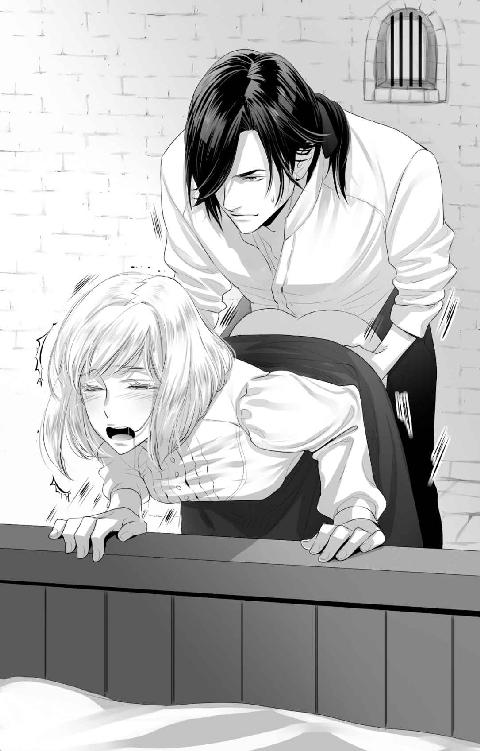
「くっ......」
いつもより達するのが早い気がする。
ぐったりと敷布に身を委ねたオデットを、ジェルトリュドは優しく抱きかかえてベッドに寝かす。そしてブラウスのボタンに手をかけた。
「ジェルトリュドさま......いきなり激しいです......」
これまでは口づけをしてとろけてきたところで服を脱ぎ身体を繋げてきたというのに、今日は牢を訪ねるなりベッドに招かれて下着を取られてしまった。秘部をいきなり舐めしゃぶられて、濡れたとわかるやあの状況である。
何かあったの？
オデットが問う前に、ジェルトリュドは言う。
「君は激しいのもお好きでしょう？ 毎回同じように始めていたら、飽きてしまうと思いまして」
手際よく上半身が脱がされていく。ブラウスから右腕を抜かれる時に痛みが走って、オデットは思わず顔をしかめた。
「火傷が増えている？」
オデットの反応に目ざとく気づいたらしい。ジェルトリュドはブラウスから引き抜かれた肌をまじまじと見つめる。
「僕が与えた傷よりはずっと浅そうですが......痛むのですね。さっきのも、痛かったのではありませんか？」
「平気です。今のはちょっと肌が引きつってしまったからで、大したことないんですから」
実際はそれなりに痛い。でも、身体を重ねている間は麻痺していた。快感で忘れられる程度の痛みなのだ。
心配させたくなくて答えると、ジェルトリュドが険しい顔になった。
「僕の前では、強がらないでください」
告げて、ジェルトリュドは一番痛む場所を掴んだ。
「いっ......」
「ほら、結構痛むのでしょう？」
すぐに手を離し、痛んだ場所に彼はそっと口づけを落とす。
「軟膏が手に入れば、すぐにでも治療するのに......。君といると、この牢から出たくなる。君のそばで君を守れないことが歯がゆい」
今まで聞いたことがないほどのつらそうな声に、オデットの心は揺らぐ。きっとこれも演技だと自分に言い聞かせても、ひょっとしたら本心じゃないのかと怪しむ気持ちも出てきてはっきりしない。
「だから、この程度、平気ですから」
きっと痕は残らない。一週間もすれば綺麗さっぱり消えていることだろう。
「僕がつけた以上の傷を君につけたくないのです」
切なげな表情に息をのむ。とても綺麗で、心を奪われた。
どうしてそんな表情ができるの？
尋ねようとした唇を唇でふさがれて、問いをそのままのみ込む。舌を絡めて、互いの熱を交換し合う。
気持ちいい......。
そっと目を閉じて、オデットはジェルトリュドに身体を委ねる。そして現実を忘れようと努めた。今のままが永遠に続けばいいのに──なんて、叶うはずのないことを夢想しながら。
ジェルトリュドにお見合いの話をする機会はたくさんあったはずなのに、あの日から彼はオデットの話を聞こうとしなかった。牢を訪ねれば強引に抱かれ、オデットがクタクタになるまで責め続ける。眠って起きれば空が薄ぼんやりと明けてきている頃になっていて、オデットは慌しく牢をあとにするのだった。
絶対に何かあったはずなのに、ジェルトリュドさまは何も教えてくれない......。それについては黙っていてもいいから、私の話を聞いてほしいのに。
自室に戻って身なりを整えながら、オデットは大きなため息をつく。ちゃんと話をしたいだけなのに、こんなに苦労するとは思わなかった。
明日はいよいよお見合いの日、か......。
お見合いの相手は侯爵嫡男の官僚だ。宮廷を出入りしているので、彼を一度見たことはある。
金髪碧眼で容姿端麗。オデットの好みとしてはシルベストルの方がずっと美しい顔立ちで素敵だと感じるのだが、お見合い相手も見た目の評判は申し分ない。仕事もよくできる男だそうで、悪い噂も耳にしたことはなかった。これまで仕事を中心に生活してきたが、そろそろ結婚をして身を固めたいと考えているらしい。歳はオデットより十ほど上とのこと。働き盛りのよい年齢と言えるだろう。
断られてしまったら、それはそれでいいけどね。
腕に残る火傷の痕はちゃんと話しておこうと思う。いざ初夜を迎えて、その傷を理由に断られるのはいろいろと気まずい。身を固めたいと考えているなら、なおさらだ。
ジェルトリュドさまは、傷を嫌がらなかったなぁ......。
遠因として彼が関わっているからだとも言えるが、そうだとしても赤く引きつった肌は気味悪く感じる人が大半だろう。わざわざそんな身体の持ち主を嫁にもらおうなどとは考えまい。
いつだって優しく触れてくれる......手当てをするみたいに。
強引なところはあっても、痛めつけるようなことはしてこない。大事に触れてくれる。だから心地がよい。
ジェルトリュドさま......。
話ができなくて、ますます彼がわからなくなってしまった。甘い言葉で快感を引き出してくれるけれど、ジェルトリュド自身が何を企んでいるのかはちっとも見えてこない。一方的な行為ばかりが続いている。でも、それは奪うことや性的欲求の発散を目的としているとも思えなかった。
夜に行ったのでは、また繰り返してしまうわ。誰かが来るかもしれない時間帯を選んで話しに行こう。
オデットは今日の予定を念入りに確認するのだった。
昼食をさっさと片付けて、オデットは牢に向かった。ジェルトリュドも食事を終えたところだろう。食器を片付ける担当の侍女が立ち去る時間を見計らっていけば、おそらく誰とも顔を合わせない。
それぞれの予定をきちんと把握したオデットは、早足に塔を登った。
いつもいるはずの見張りが立っていない。それを不思議に感じながら、ジェルトリュドが幽閉されている部屋に近づいていく。息を整えて、今日こそ話をするんだと意気込んでいると、話し声が聞こえるのに気づいた。
誰？
ジェルトリュドに用事がある人間が思い浮かばない。食器を片付けている侍女をここに来るまでに見かけていたので、使用人がそこに残っている可能性は低いと考えられる。
男の人の声......あれ？
足音をさせないよう扉に耳を近づける。一つはジェルトリュド本人の声だが、もう一つの綺麗な声にも聞き覚えがある。シルベストルの声だ。
何で？
オデットは注意深く耳をそば立てる。
「──わざわざそんなことを伝えに牢の中に入ってきたのですか、兄様は」
ジェルトリュドはいかにも馬鹿にするような調子で嘲り笑う。
「本当にお人好しですね。僕をここに閉じ込めて、優しい王様を気取っていらっしゃるのでしょう？」
「ジェルトリュド、私は──」
「ここに入ることがいかに危険なことなのか、兄様はわかっていないようですね。僕がここであなたを殺す可能性もあるというのに」
「............」
シルベストルは何かを言いかけていたが、結局口を噤む。こんな態度をとる実弟に呆れているのだろうか。
「まぁ、冗談はこの辺にしておきましょうか」
シルベストルが何も返してこないことがつまらなかったのか、ジェルトリュドは笑うのをやめて話を変えた。
「兄様は妾をとるべきではありませんか？ 別に複数の妻を娶ることを、この国は禁止していないのです。世継ぎを残したいのであればなおさら。あのお優しいお妃さまを愛しているのはもう嫌というほど見せつけられましたが、僕を王家の血を守るために幽閉するくらいなら、いっそたくさんの女性を侍らせて子を作ればいい。そうすれば、兄様の優秀な血を引く子どもがたくさん生まれて、血が絶える心配をしなくていいでしょう。国民も納得するのではありませんか？」
「確かにそういう選択肢はあります。ですが──」
「彼女ほどの魅力や能力を持った女性は他にはいない、とでもおっしゃるつもりですか？」
ジェルトリュドはシルベストルの言葉を遮って告げると、ふっと笑う。
「ロゼリーヌは兄様にとって都合のいい女性なのでしょう。僕には中身のないお飾りの人形みたいにしか見えませんけど。ただ、好きなだけ愛して、子を残すことには反対しませんよ」
「............」
シルベストルがどんな顔をしてジェルトリュドの話を聞いているのか、オデットには想像できない。愛する女性を蔑むような発言をされてもすぐに反論しないのは、彼の冷静さゆえだろう。
そして、ジェルトリュドがロゼリーヌを今でも低い存在と考えていることだけはよくわかる。国を任せるのに適さないと判断しているのだろう。それは隣国との友好を目的とした政略結婚でしかない、ジェルトリュドがそう思っていることにも起因するに違いない。彼はロゼリーヌとオデットの出身国に戦争をしかけることで経済を回そうと考えていたのだから。
ジェルトリュドは話を続ける。
「ですが、政治をこなすだけの知性を持ち合わせている子は必要なはず。僕の見立てでは、これまで大して賢いと思える女性はいなかったのですが、ロゼリーヌの側仕えは違います」
え？
唐突に自分の話題を持ち出されて、オデットは声が出そうになるところを、口元を慌てて押さえることで乗り切った。今ここで二人に気づかれるわけにはいかない。
ジェルトリュドの言葉にオデットは集中する。
「ちゃんと自分の考えを持っていますし、身を守るための知恵もある。多少のことではへこたれない精神力もあります。他人のいいなりになるようなことはほとんどないでしょう。きっと兄様の意見にも客観的な視点から助言することができる。幸い、彼女はロゼリーヌを信頼し、兄様にも好意を抱いています。妾にすると、ロゼリーヌとの仲が気まずくなるかもしれませんが、そばに置いておくには充分な素養があると思いますよ。僕をここに送り込んだ張本人みたいなものですし」
ジェルトリュドさまは、あたしがシルベストルさまを好いていることに気づいていたの？
意外だった。そもそも、オデットが誰を好いているのかなんて、興味がないと思っていたから。ジェルトリュドは、シルベストルへの想いを知っていながらオデットを抱いたというのだろうか。それとも、抱いているうちに気づいたのだろうか。
なんにせよ、報われないじゃない......。
胸が苦しい。ジェルトリュドがシルベストルにオデットを妾にするように勧めているということは、これまで囁いてくれた睦言は全てまやかしだったということだろう。オデットが予想していたとおりに彼に捨てられる展開なのに、胸が締め詰められるように苦しい。そんな自分に戸惑う。
シルベストルは何も言わない。考えをまとめているのだろうか。
「──彼女を妾にしようがしなかろうが、僕を残す理由に王族の血の保存なんてものを掲げてほしくない。僕は王妃になる人物を殺そうとしたのですよ？ 重罪ではありませんか。さっさと大々的に処刑するのが筋だと思います。兄様にとってもロゼリーヌにとっても厄介な存在である僕を、あなたがたはそれはそれはお優しい顔をしつつも、心の底では消し去りたいと憎んでいるはずだ。公の場で処刑されるまでは自害するつもりはありませんけれど、僕は死を恐れていませんよ。この計画が失敗したら殺されるだろうことを受け入れる覚悟と引き換えに、あなたが愛する人を手にかけようと決めたんです。こんな中途半端に扱うのはやめていただきたい」
それが......ジェルトリュドさまの本心だったの......？
牢を出たら妻に迎えたいとオデットに言っていたのに、彼はこの牢を出る時は死ぬ時だと考えていたということなのか。
知らなかった......気づけなかった、あたし......。
涙が止まらない。
そして自分が、彼の妻になれるのではないかと少しでも期待していたことを思い知ってしまった。ずっと彼のそばにいるという未来もあるのではないか──そんなことを夢想していたなんて。
気づいた時には牢から逃げ出していた。ジェルトリュドの言葉の続きを聞きたくなくて、もう声を押し殺していることはできなくて、全力で走った。
こんなことはやめよう。
自分が牢に向かわなければ、彼と顔を合わせることはない。それだけで、この関係は終わる。
オデットは自室に駆け込むと、気が済むまでひたすら泣いたのだった。
唇に触れる優しい感触。ゆるゆると唇を舐められる刺激があって、オデットは薄く口を開く。やがて入り込んできた柔らかな舌に歯列をなぞられて、我慢できずに舌を絡めた。
ジェルトリュドさま......？
この感じはジェルトリュドのものだと確信できた。どこまでも甘やかすようなそんな舌使いに心が溶かされそうになる。
でも......あれ？
オデットは自分がいる場所を必死に思い出す。今いる場所は自室ではないのか。今夜はジェルトリュドのいる牢には行かず、部屋で眠ったのではなかったのか。
急激に意識が現実に引き戻されて、オデットは目を見開く。口づけをしている人物を遠ざけようと手を動かそうとして、それで自分の手首が背中側で縛りつけられていることに気づいた。
「んんっ！」
流し込まれる唾液を飲み込むと淫靡な気持ちになってくる。口づけだけにとどまらず、薄い寝間着の上から胸の膨らみを撫でてきた。小さな膨らみを持ち上げるようにして捏ね、先端をひねり出すように摘んで伸ばす。
「あぁっ、やっ......」
身体の自由を奪われているからか、余計に感じてしまっている。できる限りの抵抗をと身体をよじり逃げようとしてみるも、全く役に立たない。
「なぁ......っ、なんで、こんな......あんっ！」
声をできるだけ抑えようと思っているのにこらえられない。相手がジェルトリュド本人だからだ。
薄暗がりの部屋でも、馬乗りになって触れてきている相手がジェルトリュドだとすぐにわかった。何度も見てきたその美しい影を、オデットはもう忘れられなかったから。
「オデット......君が来てくれないからですよ。最後の夜になるかもしれないのに、来てくれないから」
告げて、彼は首筋を強めに吸いながら、胸の先端を強くしごいた。
「やんっ！」
快感が全身を包み込む。びくんと身体をしならせると、汗が吹き出てきた。オデットは息が荒くなってしまっているのを、会話をするために整えねばと意識する。
「お見合いをすると聞きました。どうして断らなかったのですか？」
「あ、あなたには関係ないことでしょう！」
オデットは怒鳴る。どうしてそんなことに答えねばならないのだろうか。ずっと嘘にまみれた愛を囁いてきた人物に。
「関係ない......ですか」
胸で遊んでいた右手が、腹部を撫でてどんどんと下肢に向かっていく。下着の中に手を差し込むと、迷わずに脚の付け根をなぞった。甘い蜜で濡れた割れ目に触れられると、オデットは軽いめまいを覚える。
「やぁっ......こんな......こんな......っ！」
やめてほしくてジェルトリュドを見つめる。涙で歪む視界には、冷たく笑うジェルトリュドの顔があった。
「気持ちがいいのでしょう？ 僕を求めている証拠です。──こういうことを、他の男にされてもいいと、君は考えているってことですよね？」
指先の動きが激しくなってくる。膨らんでしまった敏感な粒を擦られると、オデットの意識は会話どころではなくなってしまった。
とめどなく溢れる蜜と嬌声。ぐちゅぐちゅという水音と自身が発するいやらしい声で耳が犯されていく。
「君の気持ちのいい場所は、全て把握しているんですよ、僕」
その声が呼び水のようになって、オデットは強い快感にのみ込まれた。
「あぁぁあんっ！」
びくびくと身体が震える。ぐったりとしてしまって、もう動けなかった。
浅い呼吸を何度も繰り返しながら、オデットはジェルトリュドの姿を目で追う。
「君の口からお見合いの話を聞こうとしなかったのは、悪かったとは思います。ですが、僕は君がきっと縁談を断るだろうと期待していたのです」
告げながら、ジェルトリュドはオデットの下着を脱がし始める。汗や蜜でしっとりとした下着が取り払われると、オデットの身体に力が入っていないのをいいことに、脚を大きく割り広げた。彼の眼前に露わになった秘部を、ジェルトリュドはまじまじと観察し、顔を近づけた。
「お願い......ジェルトリュド、さま、はぁ、もう、やめ──あっ！」
何をされるのか想像がついた。彼は溢れる蜜を吸い始めたのだ。長い舌で舐めとり、そして今しがた達したばかりだというのに、粒を丁寧に舐めしゃぶる。
「やっ、やめ、あっ、ああんっ！」
手で口をふさぎたいのに、後手に縛られていてはかなわない。声がかれそうになるくらい喘ぎ声を出させられ、気絶しそうになるほどの快感を何度も何度も与えられた。
「......ひどいです......ジェルトリュドさま......」
掠れた声で彼の名を呼ぶ。気持ちがよくてしょうがないはずなのに、心はいつも以上に空虚だった。ぶつけられる感情がなんなのかわからない。
二本の指が膣に挿入された。壁面を撫でられて、肌がざわつく。ぬるぬるとしたそこは、それ以上の太さのものを求めて貪欲にうごめいている。
なんで、こんな......。
苦しい。肉体と精神が求めているものがちぐはぐになっている。オデットは自分がどうしたいのか、だんだんわからなくなってきた。
そして、彼が求めているものがなんなのかも、見えない。こんなに近くにいて、触れ合っているはずなのに。
「オデット......僕はやはり君が欲しい」
蜜で濡れた唇がオデットの唇に重ねられる。そして膣に挿入されたままの指が、快感を生み出す窪みにはまって動き出す。
「んんぅっ！」
おかしくなってしまう。官能に思考が塗り潰されていく。心地よさに身悶えしながら、オデットはジェルトリュドの腕に支えられて痙攣した。
「はぁっ......はぁっ......」
意識が朦朧とし始めていた。気絶なのか睡眠なのかわからないように意識を失うのも間もなくだ。
「ジェルトリュド、さま......」
また話ができない。目を覚ました時、彼はもうそばにいないような気がする。
そう思うと悲しくて、寂しくて。オデットは涙を流しながら、ジェルトリュドを見る。焦点は定まらない。でも、彼の顔を見ていたかった。
「......お願い......生きて」
もっと話したいことはたくさんある。
もっと伝えたいことはたくさんある。
だけど、声になった言葉は《生きて》だけ。あれほど憎くて、殺そうとさえ考えていた相手なのに。
「......オデット」
彼が困ったように笑ったのが、目を閉じる前に見えた気がした。
行ってほしくなかった。一人残されるのは嫌だった。いつもは自分から出て行くから、彼がこんな感情を抱いているのだなんて想像できなかった。もう会えないんじゃないかという漠然とした不安も、今なら理解できる。
あたしを置いて行かないで。
寝ぼけているのか、まだ夢の中なのか、愛しい温もりを感じて、オデットは擦り寄る。シャツ越しに感じる胸板に頬をこすりつけるようにして彼を思い出していると、耳元でふっと笑う声がした。
「──君は可愛いことをしますね」
幻聴かと思った。でも、彼の長い指先が、オデットの銀髪に差し込まれたのに気がついて、ゆっくりと目を開ける。
「オデット」
緑色の瞳と目が合うと、ジェルトリュドは優しく微笑んだ。温かくて、ホッとする顔だ。
「ジェルトリュドさま......」
声が少し掠れている。ジェルトリュドに悪戯を仕掛けられたのも夢ではなかったようだ。二人並んで、ベッドの中で横になっているらしい。
「あたしを攫いに来てくれたの？」
寝起きだからか、願望が素直に口から出てくる。
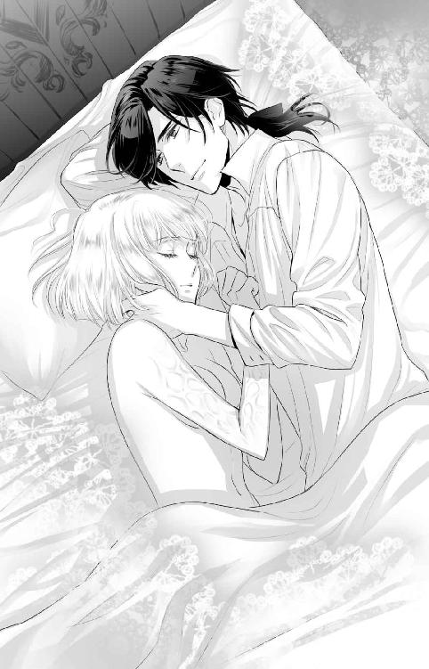
ここはオデットの部屋だ。牢にいなければならないはずのジェルトリュドがこの部屋にいることには疑問を覚える。しかし王宮から逃げるつもりであれば、そんな疑問は些細なことに感じられた。
オデットの問いに、ジェルトリュドは小さく首を横に振る。
「僕には果たさなければならない義務があります。僕が犯した罪を償うことは、君も望んでいることでしょう？」
苦笑されてしまった。
そんな彼の腰に手を回して、抱き締める。もう手首を縛められてはいなかった。
「確かにそうですけれど、あたしはあなたに死んでほしくない」
彼を離したくなくて、腕に力がこもる。離してしまったら、もう二度と会えなくなってしまうような気がして。
「......生きていても、つらいだけです」
ジェルトリュドは告げて、オデットの頭を優しく撫でる。
「そんなこと──」
「君は他の男のもとに嫁ぐつもりなのでしょう？ お見合いをするということは、僕から離れるつもりでいるということではありませんか。僕は寂しく思いますが、死を待つだけの僕が口出しできるわけがない。幸せを思い出させてくれた君に感謝し、心から祝福しますよ」
そんなことを伝えるために、彼はこんなところまで来たというのだろうか。牢から脱走したことが知れれば、あの寛大な王シルベストルでも何かしらの処罰を与えざるをえなくなるだろうに。
「嘘よ。あなた、また、嘘をついてる」
涙が溢れてくる。
こんな優しい嘘をつかせているのは......あたしなんだ。
胸が締め付けられた。
「あたし、あなたがシルベストルさまと話をしているのを聞いてしまったの。あたしをシルベストルさまの妾に推してくれたこと、王家の血を絶やさないために幽閉するくらいなら早い処刑を望んでいることを」
彼がどんなつもりで実の兄にあんなことを言ったのか、今ならわかる。自分が誤解していたんだって、わかる。
「えぇ、全て本音ですよ。まぁ、兄様の妾に推薦したのは、兄様のそばに置いてくれるなら、君と離れ離れになる可能性が低くなるだろうという浅はかな目論見も含んでいますけれど──」
「違うわ。それは建前でしょう？」
オデットがきっぱりと言い切ると、彼の緑色の目が大きく見開かれた。
「まさか」
おどけるジェルトリュドに対し、オデットは首を横に振る。
「あたしとあなたは似ている。周りとうまくやるために、自然と嘘をついてしまうところ。本音よりも建前を優先するところ。本当の気持ちを隠すのに慣れてしまって、素直になれないところ......だから、わかるのよ」
いつの時だったか、ジェルトリュドは言っていた。「互いに心を開く準備ができたら」と。きっと今がその時なのだ。
ジェルトリュドの瞳が揺れている。
「あたしはあなたにいなくなってほしくありません。重罪を犯した人であっても。あたしは......いつまでもあなたのそばにいたい」
手放すものかと抱き締めて、彼の胸に顔をこすりつける。泣き顔を見られたくなかった。みっともない顔をしているに違いなかったから。
「オデット......」
「刑を軽くするためにあたしを利用したとか、あなたを牢送りにしたあたしに復讐するつもりだったとか、言い訳はいくらでもしてくれていい。好きなだけ偽って構わない。だって、それは全部建前なんだもの」
涙が止まらない。どうしてもっと早く気づけなかったのだろう。彼の深い愛情に。
「愛し方がわからなくて、素直になれなくて......でも、過去は変えられないし、罪は償わなければならないし、そんなことを考える真面目な人。ジェルトリュドさまは、あたしを愛そうと懸命になっていたんだって今ならわかります。ちゃんと愛してくれていた。不器用なりに、努力してくれていた。あたしが受け入れられなかったばかりに、ごめんなさい」
彼の気持ちが伝わりにくいのも当然なのだ。ジェルトリュドはきっと、心から誰かを愛したことがない。だから、愛の伝え方が下手なのだ。
そして、オデットも彼を疑う気持ちが強くて、本心に目を向けられなかった。彼の不器用な言葉が、偽っているように感じられてしまった。
全部誤解だったんだ。
これで終わってしまうのだろうか。建前としては、終わってしまった方がいい恋なのだろう。しかし、そうだとしてもこの思いに決着をつけられそうにない。
涙が溢れる。どのくらい泣いたら枯れるのだろうかと思うくらいに、オデットは泣きじゃくっていた。
「──こんなに泣かれるとは思いませんでした」
ジェルトリュドはオデットを優しく抱き締める。なだめるように頭を撫でた。
「やっとここまできましたか。身体を開くのは簡単でしたが、心を開くのは難しいですね......お互いに」
そっとオデットの額に口づけを落とす。
「僕は君を諦めようかと思っていたんです。気持ちが伝わらないまま君を抱き続けても虚しいだけ。身体だけの関係を続けるのは、互いによくないですから」
ジェルトリュドの告白に、オデットはそっと顔を上げる。すると、溢れる涙を指で優しく拭ってくれた。
「君がお見合いをすると聞いた時、やっと君の本心がわかると期待しました。そして、僕を選んでくれることを望んだ。きっと何らかの理由をつけて、縁談は断るのだと。なのに、僕のもとにはお見合いがなくなったという話は来ない。さらに、君からお見合いを受ける話なんて聞きたくなくて、あんな真似をしてしまった......。それでも君は健気に僕のもとに来てくれる。君が何を考えているのかわからなくて、不安で......身体だけの関係と割り切っているから訪ねてくるんじゃないかとさえ感じていました」
時々つっかえながらも、ジェルトリュドの言葉は続く。
「やがて今日になって、でも君は姿を見せなくて。逃げている場合ではないと悟りました。今夜は君の話をちゃんと聞こう、そう思って待っていたのに来る気配がない。これで終わってしまうと感じたら、すぐにでも君に会いたくなって。見張りを騙して縛り上げ、王族しか知らない裏道を抜けてここまで来ました。君を無理やり犯して、詰って、それで終わりにすればいい、そう考えて。僕が愛を囁いたところで、どうしたって報われない。ならば、全部を本当の嘘にして、君を解放しようと──そう考えていたのに、君が生きてくれだなんて言うから、計画が狂ってしまったではありませんか」
困ったように笑って、ジェルトリュドはオデットの唇に自身の唇を重ねる。軽く触れて離れて、もう一度重なった時には舌が絡まった。
「んっ......」
どことなくしょっぱいのは涙が混じっているからだろうか。呼吸困難になりそうなくらいに深く深く口づけをして、互いが離れた時には糸を引いていた。
「オデット。僕は死を恐れない。ですが、生きている間は君とずっと一緒に過ごしたいのです。君の笑ったり怒ったりする顔を見ながら、処刑される日を迎えたい。君に僕の最期を見届けてもらいたい。──独りよがりで、実にわがままな願いであることは承知しております。こんな僕ですが、添い遂げてはくれませんか？」
長い長い告白のあとの求婚の言葉。申し訳なさそうな表情で告げるジェルトリュドの姿など、今まで見たことがない。たぶん、飾らないありのままの顔なのだろう。
あたしはもう、迷わない。
頷いて、口づけをして。そして彼のシャツに手を掛けた。
「──ジェルトリュドさま。あたしを、あなたの最初で最後の花嫁にしてください」
肌を重ねることへの後ろめたい気持ちが完全に消えた。ジェルトリュドが触れる指先に激しい愛情を感じながら、オデットは身を任せたのだった。
降り続ける優しい口づけの雨に、オデットは身体を甘く震わせた。張った乳房や濡れた割れ目に指先が触れるとたまらず声が漏れる。今までで一番気持ちがいい。重なる熱い肌、蒸れて香る汗は互いを高揚させた。
「ジェルトリュドさま......」
生まれたままの姿で抱き合う。急がないゆっくりとした営みは久しぶりで、どこか身体が焦れている。彼の首に手を回して寄せ、口づけをねだった。直接唇に触れず、首元、額、頬と唇を落としたあと、口をふさぐように深い口づけをする。
互いの舌が絡まり、熱を交換する。擦り付け合い、舐め合って、やがて離れる。
「オデット......ずいぶんと口づけが上手になりましたね」
「......全部、教えたのはジェルトリュドさまですけど？」
荒い息をそのままにオデットが返すと、ジェルトリュドは再び口づけをした。翻弄されるほどの激しさに、頭がクラクラしてくる。
「僕好みの積極性です。君は完全に受け身になることも、ましてや僕を手懐けようなどと考えることもなくて、とても心地がいい」
告げて、耳元に唇を落とす。チュッと鳴って、耳を舐められると快感に震えた。
「あ、あたしは受け身のつもりですけど？」
「受け身の人間は自分から口づけをねだったりしませんよ。それに、命じられたからと言って、上に乗るようなこともしないのではないでしょうかね」
ジェルトリュドはそう答えて、オデットの胸を優しく揉みしだく。指の間に頂を挟まれてしごかれると、甘い痺れが全身を駆け抜けた。
「んっ......ひどいことを言われている気がする......」
説明が不満でつぶやくと、ジェルトリュドはクスッと小さく笑った。
「君は毒入りの僕も好きなんでしょう？」
「別に好きってわけじゃ......」
彼らしいと感じるだけで、好ましく思っているわけではないと思う。どちらかといえば、甘い愛の言葉の方が好きではなかろうか。
「さっきより濡れていますけど」
彼の指先が股間に届いて、ぬるりとした割れ目をグチュグチュとかき混ぜる。
「これはジェルトリュドさまの口づけが心地よかったからであって──」
「また、そんなことを言って煽るんですから」
指が蜜壺の中に挿入された。内側をなぞられるだけでピクッと身体が疼く。
「ふ、あっ......」
「知らないのですか？ 毒だって、容量を誤らなければ薬になるのですよ。君を酔わせるには今の僕くらいがちょうどよいのでしょう」
指が抜かれ、熱くたぎったモノが当てられる。オデットは触れたそれが入ってくるのが待てず、自分から腰を動かして招いた。先端を咥えると、それだけで幸せな気分になる。
ジェルトリュドが穏やかに微笑んでオデットの顔を覗いた。
「ほら。素直に認めたら、突いてあげますよ」
入口をゆるゆると刺激されると、オデットはますます焦れてしまう。
「な、なんでジェルトリュドさまは余裕なんですかっ！」
同じくらい想い合っているのではないのか。納得ができなくてオデットはにらみつつ頬を膨らませた。
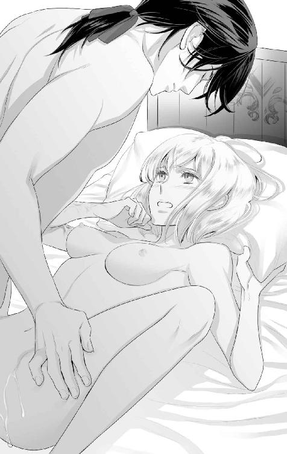
「君をいじめるのが楽しいからですよ。悦ばせるのも楽しいですが、落としてから上げた方が気持ちがいいでしょう？」
「嫌な趣味ですね......」
嫌な趣味とは言ったが、それで気持ちよくなってしまうのだから、自分の身体が恨めしい。
認めたくなくて、オデットは自分から彼を奥に招いて身体の向きを変える。ジェルトリュドを下敷きにして、オデットが上になった。
「オデット」
「あ、あたしは、あなたの思いどおりにはなりませんからね！」
腰を落とし、ぐっと奥に彼の熱棒を挿れる。身体を貫かれて、快感に背が反った。
「えぇ。君は僕の計画をことごとく壊すような人ですからね。望むところです、可愛いオデット」
どうして彼はこういう時に幸せそうに笑うのだろう──そんなことを考えていたらジェルトリュドに突き上げられて、オデットは視界にちらつく星を見ながら彼の胸に倒れ込む。
「君のことが、僕は好きです。愛しています、オデット」
顔を上げさせられて、口づける。
「ジェルトリュドさま......あたしも」
彼の本心はやっぱりよくわからない。でも、そんなところも含めて好きになってしまったようだ。
どっちにしても、あたしも、あたしのことがわかんないわ......。
それでいいんだ、とただ認めて。オデットは同じように彼も受け入れたのだった。
何度も抱き合ったあと、ジェルトリュドは暗い中を牢へと帰っていった。その姿を見られてしまったらその場で斬り捨てられてしまう可能性もあったが、きっと彼のことだ、うまく言いくるめて戻れるだろうとオデットは信じる。
ジェルトリュドさまの心配もそうだけれど、あたしも頑張らないと。
うだうだしているうちに、お見合いの当日になってしまった。すっぽかすには、相手にも、紹介をしてくれたロゼリーヌにも申し訳が立たない。きちんと事情を説明して、断りの連絡を入れるべきだろう。
ジェルトリュドさまとの関係を説明して......いいんだよね？
順番がいろいろと入れ替わってしまったが、求婚されてそれを承諾したのだから、婚約者同士とは言えなくても恋人同士には違いないはずだ。婚約者として認めてもらうためにも、ロゼリーヌを説得して理解を示してもらわねばならない。
悲しむかな......。
裏切ったと思われてしまうだろうか。不安な気持ちを抱えて、オデットはロゼリーヌの部屋に向かう。
「ロゼリーヌさま、ごめんなさい！」
「え？」
部屋に入るなり、すでに起きていたロゼリーヌに頭を下げて謝る。前置きが必要なのはわかっていたが、こういうときには勢いも大切だ。頭を下げたまま、ロゼリーヌの反応を静かに待つ。
しばらく反応がなかったが、オデットが動かないのを見かねてロゼリーヌが近づいてくる。
「えっと......どのことを謝っているつもりなの？」
どのこと？
そんなにいろいろ謝らなければならないことがあっただろうか。
顔を上げてロゼリーヌを見ると、彼女は優しく微笑んでいた。
「オデット。全部聞かせて。あなたが話そうと思った全てのことを」
ロゼリーヌが窓際のテーブルを勧めて告げる。どこか嬉しそうに見えるのは気のせいだろうか。
オデットは勧められるままにテーブルにつき、ジェルトリュドの牢に行ってからこれまでのことを説明した。
「よかったわ」
全てを洗いざらい話し終えた時にロゼリーヌが告げたのはそれだけだった。春の柔らかな陽射しに照らされる花のような笑みを浮かべて、オデットを見ている。
「よ......よくないでしょうっ！」
そんな様子に驚いて声を荒らげたのはオデットだった。テーブルをドンと叩いて、椅子から腰を上げて告げる。
「あたしは裏切ったのですよ！ あなたを手にかけようとした男に惚れて、彼と一緒にいたいからってお見合いを当日にやめると言い出しているってのに、どこがいいんですかっ！」
のほほんとしているお姫さま──いや、今はもう王妃であるが──だと出会った頃から思っていたが、まさかこんな態度をとられるとは考えてもみなかった。もっと人並みに悲しんだり怒ったりするのではないか、と想像していたのに。
オデットが怒鳴ると、ロゼリーヌは不思議そうに首を傾げた。
「そんなことはどうでも構わないわ。わたくしはただ、親友であるあなたに心から愛する人ができたのだと告げられたことに喜びを感じているの。だから、いいに決まっているじゃない」
「............」
ジェルトリュドによって何度も死にかけたはずなのに、おおらかなのにもほどがあるだろう。オデットは頭痛を覚えて額に手を当てながらゆっくり腰を下ろす。
「あと、オデットはわたくしのこと、誤解しているわ」
ふふっと笑う声が聞こえて、オデットはロゼリーヌをゆっくり見上げる。
「わたくしはあなたが思うよりも強かな人間よ。あなたがジェルトリュドさまと愛し合う関係であるのなら、もしあの方がまた不穏な動きを見せた時に相談してくれると信じているもの。あの方の計画を破綻させることができるのは、きっとあなただけだと思っているからね」
ロゼリーヌはニコニコといつもの可愛らしい笑顔をしているように見える。だが、その気配には、わたくしを裏切るようなことはしませんよね、と迫るものがあった。
なんだ。怒っているんじゃない。
「あたしが恋人に加担しないとは限らないと思いますけどね」
親友の方が付き合いは長いが、恋人と親友のどちらを取るのかと言われると、その状況になってみないとわからない。ジェルトリュドを愛することになると思っていなかったのと同じようなものだ。
オデットがさらっと言ってやると、ロゼリーヌの表情に少し怒りが見えた気がした。
彼女が怒っているのは、裏切ったことじゃなくて、いつまでも関係を黙っていたことなんだろうな。
もっと彼女を信用して、相談してもよかったのかもしれない。そうしたら、変な気を遣わせる必要もなかっただろう。お見合い相手に選ばれた人が気の毒だ。
ロゼリーヌさまはあたしのことを親友だとおっしゃってくれるけれど、あたしは彼女に遠慮するところがあったってことなのかしらね。
ロゼリーヌとオデットは主従の関係でもあるのだから、そこはしかたがないだろうけれど、彼女はそれをよしとしていなかったということでもある。友人として、それは嬉しいことだ。
「──全部話してもらえたことだし、行きましょうか」
唐突にロゼリーヌは立ち上がり、歩き出す。
「行くって、どちらへ？」
部屋を出てまっすぐ歩くロゼリーヌの後ろを慌ててオデットは追いかける。今さら気づいたが、ロゼリーヌはすでに寝間着から着替えており、髪も簡単ではあるが整えてあった。自分で済ませていたようだ。はじめからオデットをどこかに案内するつもりで準備していたのかもしれない。
「すぐにわかるわよ」
どこか楽しげな声が返ってくる。オデットは訝しく感じながらも、彼女に従った。
離れの塔に向かっているとわかり、行き先はジェルトリュドが幽閉されている部屋だと確信した。だが、そんな場所に連れて行ってどうしようというのだろう。
階段を上り、部屋が見えてきたところでそこに人影があるのに気づく。着ている衣装の華やかさから見張りではないと理解し、そしてその正体に思い当たる。シルベストルだ。
「シルベストルさま、お連れいたしましたわ」
ロゼリーヌがにこやかにシルベストルに挨拶をする。シルベストルはロゼリーヌを、そしてオデットの顔を見て優しく微笑んだ。
「では、四人で話をしましょうか」
告げて、シルベストルは牢の扉を開けた。
「朝からなんの騒ぎですか？」
牢の中に入ってきた顔を見るなり、ジェルトリュドは怪訝な視線をシルベストルに向ける。だが、ベッドの上に腰を下ろしていたジェルトリュドは最後に入ってきたオデットの姿を認めて、なんとなく察したらしい。あからさまなため息をつく。
「あぁ。脱走したことを知って、裁きに来たんですか？ 好きにしてくださっていいですよ。王家の血を絶やさないためにしか存在しない僕の命なんですから」
つまらなそうにおどけて言ってシルベストルを挑発するが、彼は面白くなさそうな顔をして息を吐き出すだけだった。
「ジェルトリュド、貴方を捻くれ者にした責任は私にもあるとは思いますが、ここは真面目に話をしましょう」
「僕にはわかりませんよ。嘘偽りを重ねてでも僕の生命をながらえさせようとする兄様の気持ちが。もっと怒るべきだ。恨むべきだ。それに、兄様たちの味方であるはずの彼女を堕としたのは僕です。許せないとは思わないんですか？ 騙しているとか、脅しているとか、考えたりしないんですか？」
ジェルトリュドは興奮気味に告げて、シルベストルに迫った。シルベストルの態度が気に障ったらしいことは明白だ。
シルベストルは挑発には乗らない。穏やかな笑みをたたえたまま、唇を開く。
「きっかけはどうであれ、ジェルトリュド、貴方はオデットと添い遂げたいと希望しているのでしょう？ 心から愛したいと思える人ができたことを、私は歓迎し、祝福しますよ。何をそんなにムキになる必要があるのです。昔からですが、本当に貴方は照れ屋さんですね」
照れ屋？
シルベストルの評価に、オデットはジェルトリュドを見やる。彼は唇を引き結んで黙っていた。心なしか顔が赤いような気がする。
「状況を耳にした時はどうなることかと思いましたが、収まるところに収まったようでよかった。互いが望むのであれば、処刑のその日まで夫婦として過ごすといいでしょう」
関係を認めてもらえたようだ。処刑の日までと短い期間ではあれど、夫婦でいられるのは素直に嬉しい。オデットがシルベストルから視線をジェルトリュドに移すと、彼もまたこちらを見ていた。動揺の色が瞳に宿っている。
「処刑の日は、ロゼリーヌが男児を出産した一年後にしましょうか。子供が生まれると忙しくなりますしね」
そう決められてしまうと、オデットは心が痛んだ。早ければ、二年後には別離が待っている。せっかく互いを愛し合える人に出会えたのに。
「そうですね。それでいいと思います」
頷いて返したのはジェルトリュドだった。迷いなくさっぱりとした口調なのは、覚悟ができているからだろう。最初から、殺すか殺されるかのつもりで計画に臨んだ人だ。ただながらえているのではなく、前よりも明確な死の宣言に、どこかホッとした気配すら感じた。
「つまり、わたくしが無事に男児を出産した一年後、ジェルトリュドさまはジェルトリュドさまではなくなります」
ロゼリーヌが補足するように告げて、部屋の空気が変わった。
「......どういう意味ですか？」
妙な言い回しが引っかかって、ジェルトリュドが片方の眉を上げてロゼリーヌを見やる。この質問をしている時点で、シルベストルたちが何を伝えにこの部屋にやってきたのか察していたのかもしれない。
オデットも、彼らが何を企んでいるのかおおよそ見当がついていた。期待する言葉を直接聞きたくて、オデットは黙って答えを待つ。
「ジェルトリュド、貴方は生きなさい。オデットと一緒に、その一生を終えるのです」
その返事に激昂し、立ち上がったのはジェルトリュドだった。シルベストルの胸倉を掴み、壁に押しやる。
「生き恥を晒せと、兄様はおっしゃるのですか！ 表向きに死んだことにしてまでっ！ どこまで僕をコケにすれば、兄様は満たされるんですっ！ 僕はあなたの引き立て役ではないっ！」
大声で怒鳴り散らして、ジェルトリュドはシルベストルをにらむ。
シルベストルはジェルトリュドの手に自身の手を添えてふっと微笑んだ。
「やっと聞けた──それが本音でしたか」
「............」
ジェルトリュドの手がゆっくりと離れていく。本気で危害を加えようとしたわけではなかったのだ。
「引き立て役ではないと否定しながら、そうあるように貴方は努力を重ねてきたのですね。だから、私の手で裁かれようとした。それもまた、この国のためを思ってのことでしょう。充分にその機能は活きたと評価していますよ。ですから、その役目から解放してやりたいのです。愛する人と過ごす権利を与えるのは、私のせめてものお詫びのつもりです。愛し愛されることを拒否し続けてきた貴方に与えるべき罰とも言えるでしょう」
ジェルトリュドは何も言わない。お詫びであり罰でもあると言われて、どう返してやればいいのかわからず困惑しているようだった。
そして、この場にいるオデットも話についていけないでいた。
だが、ロゼリーヌがニコニコとしたまま耳を傾けているのを見るに、シルベストルとロゼリーヌは前々からオデットたちの関係を知っていて、計画を立てていたのだろうことが容易に想像できる。使用人たちの間で噂になっていれば、それなりに気にかけるかもしれないという可能性は考えていたが、ここまで動くとは予期していなかった。ロゼリーヌは見て見ぬ振りをし続けると思っていたから。
シルベストルは言葉を続ける。
「王都から離れた土地にある古い宮殿を貴方たちの新しい住まいとするように手配しています。私のやり方が気に食わないというのであれば、処刑の後に心中でもなんでもすればいいことです。どうせ表向きは死んでいるのですからね。元王子としての仕事を終えたのなら、構わないでしょう？」
シルベストルの提案に、ジェルトリュドはしばらく黙って何かを考えているようだった。そんな彼の元に、オデットは近づいて手を取る。
ジェルトリュドの緑の瞳がオデットを映す。
「あたしはあなたと生きたいです。処刑の日までと言わず、そのあとも。できることなら、あなたの子どもを産んで、育てたい。あなたはあなたの人生を歩んでいいのだと思います。そのお手伝いを、あたしはしたいの」
ジェルトリュドには王族としての矜持があり、それをまっとうするために必死に生きてきたのだろう。本音を建前で隠して、なまじ頭がいいばかりに嘘で気持ちを隠してきた──器用だけれど、不器用な人。
あたしの声はあなたの心に届きますか？
死にたいという彼には酷なことかもしれないけれど、一緒に生きたいと願うことまで酷なことであってほしくない。愛する気持ちを知ったのだったら、この想いも届いてほしい。
ジェルトリュドの手をぎゅっと握ると、彼は握り返してくれた。そして、手をそのまま引いてオデットの小さな身体を抱き締める。オデットは彼の胸元に顔を埋めた。
「ジェルトリュドさま？」
「オデット......あんまり可愛いことを言わないでください。君との間に生まれる子どもはどんな子だろうだなんて、想像してしまうではありませんか」
その言葉は、未来への希望を感じさせるもので。
オデットがぱっと顔を上げると、かがんだジェルトリュドに唇を奪われた。
「んっ！」
シルベストルとロゼリーヌの前で口づけをしてしまったことに気づいて、急に恥ずかしくなる。心音が高鳴った。
「いいでしょう。僕は生きましょう。オデットとともに」
ジェルトリュドは口づけをやめるとオデットを横抱きにして持ち上げた。
「え、あの！」
どうして抱き上げられたのかわからない。暴れて落とされても困るので、オデットは声を上げるだけにする。視線が高くなってちょっと怖い。
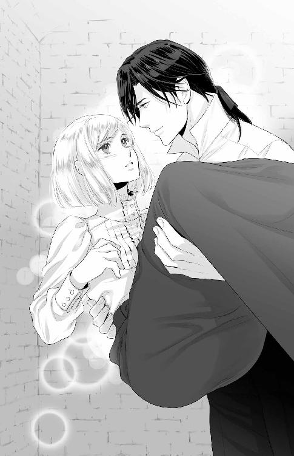
「話は終わりですよね、兄様。それなら、公務に支障が出ないうちに戻った方がいいのではないですか？」
確かにそろそろ朝食を終えて、公務の準備に入る頃である。今日の予定はそれほど忙しくはなかったと思うが、ゆっくりできるほどの余裕があるわけでもないとオデットは記憶している。
ジェルトリュドの問いに反応したのはロゼリーヌだった。両手をポンと合わせて、にっこりと微笑んだ。
「そうですね。方向性は決まったことですし、お暇しましょうか。ここに長くいることが周りに知られるのもあまりよくありませんしね」
何か言いたげだったシルベストルの手をロゼリーヌは積極的に引いて、牢を出ようと勧める。
「......今後については、また話し合いの場を設けることにしましょう」
ロゼリーヌに勧められて渋々といった様子でシルベストルは合わせ、二人は仲良く牢を出て行った。
「あ、待ってください。あたしも戻ります！」
ジェルトリュドに抱き上げられているので、彼らについて行くタイミングを逃してしまった。下ろしてくれと訴えると、ジェルトリュドは歩き出す。そしてベッドに下ろされた。
「ちょっ、ジェルトリュドさま？」
嫌な予感がする。
不安な気持ちで見上げると、ジェルトリュドは薄く笑っていた。
「僕を期待させたのですからね。その意味を、わかっているのでしょう？」
問いに答える時間を与えず、ジェルトリュドは唇を重ねた。
はて、何を期待させたのかしら？
口づけの甘い嵐を感じながら、必死に記憶を辿り──そして行き当たった。二人の子どもを彼は見たいのだ。
「ま、待ってください！ い、今からですかっ！ 誰が来るかわからないのに──あ、んっ！」
こんな時間から子作りだなんてと頭では考えているのに、身体は彼に触れてほしくて温まっている。あんなに明け方まで互いの身体を貪り合っていたというのに。
「ロゼリーヌは察していたみたいですからね。適当に人払いをしてくれるでしょう。そのくらい気がきくような女性でなければ、僕は彼女に復讐しますよ」
耳を甘噛みされて、オデットは甘い声で鳴く。どこまで貪欲なのだろう。
「そうなったら、あたし、絶対に止めますからねっ！ 親友に手を出さないでください！」
「いつまでそんなことを言っていられるでしょうかね。僕の味方につきたくなるくらいの甘美な躾で翻弄して差し上げますから、覚悟してください」
「や、あっ！ んっ......」
甘やかすようなとろける口づけと愛撫に、彼の本気具合が感じられる。
堕とされちゃったらごめんなさい、ロゼリーヌさま。
親友に詫びていられたのはほんのわずかな時間で。
オデットはジェルトリュドからの愛情を一身に受け、同じだけの愛情を返そうと努めたのだった。
《了》
あとがき
《ジェルトリュド》って名前、実は女性名らしいです......あっ、こんにちは。ただふみです。
この度は本作品をご購入いただきありがとうございます！
心より御礼申し上げます。
本作品は、《ヒロインが監禁される話は多いけれど、ヒーローが作中ずっと監禁状態にある作品って少ないよなあ》と思い、自分ならどう描くのかを考えて書き始めたお話です。そして、自分の書いた作品では一番エロティックなものになるかと思います。こういうラブシーン中心のお話も書いてみたかったんですよね。
これまではヒロインとヒーローが肉体的に結ばれるまでを描く作品を中心に執筆していたのですが、今回は身体から始まる関係を書きたくて──書いてしまいました。自分の作品の中で毛色が違うのではないかと思いますが、オデットとジェルトリュドの微妙な関係や感情の揺れ動きを楽しんでいただければ幸いです。
最後に謝辞を。
担当さま。今作ではこれまで以上にお世話になりました。ありがとうございました。ここに至るまでに二度の入院を挟むことになってしまい、大変申し訳なかったです。これからもどうぞよろしくお願い申し上げます。
素晴らしいイラストをつけてくださった有馬かつみ先生。表紙のイメージをいただいたときの感動は忘れられません。愛らしいオデットと色気漂うジェルトリュドを描いてくださりありがとうございました。
この書籍に携わってくださったたくさんの方々にも感謝を。
そして、この書籍を購入してくださったあなたに最大の感謝を！ 少しでも面白いと感じていただけることを祈っております！
では、またどこかでご縁がありますように。
平成二八年四月吉日
ただふみ 拝
トパーズノベルス
同時配信二〇一六年五月二七日配信予定
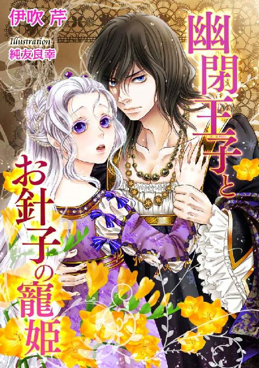
幽閉王子とお針子の寵姫
【書下ろし・イラスト十枚入り】
著作：伊吹芹
イラスト：純友良幸
「『いい』と言ってみろ。『もっと』と」
針子のアリアーヌは、ある日王宮へと連れて行かれる。そこで貴婦人のように振る舞う狂人ディトリッシュ王子の相手をすることに。襲われ純潔を失うが、王子が狂人のふりをしているのではとアリアーヌは思い始め......！
トパーズノベルス
同時配信二〇一六年六月二四日配信予定
お嬢様は欲求不満!?～フィアンセと蜜夢の呪い～（仮）
【書下ろし・イラスト十枚入り】
著作：大原一恵 イラスト：深山キリ
「君はずいぶん、可愛く乱れるんだね」
立花財閥の令嬢・結里花は、ある日から凌辱される夢を見始める。不安な日々を送りつつも誕生日を迎え、親が決めた婚約者・俊尚と初対面するが、俊尚の手が夢でいつも結里花を助け出そうとしてくれる手だと気づき...！
蜜約～ラシェルとふたつの白い薔薇～（仮）
【書下ろし・イラスト八枚入り】
著作：燈花 イラスト：緒田涼歌
「きみは、僕たちふたりに、愛されすぎてしまったんだよ、ラシェル......」
芸術家を目指すラシェルは、画商の息子ギデオンに一目ぼれする。だが、彼に婚約者がいると知り、ラシェルはギデオンの誘いを断ってしまう。その後、進められた縁談で出会ったのはギデオンと瓜二つの青年で......！
トパーズノベルス
蜜愛の牢獄～メイドは反逆の宰相に乱される～
電子第一版発行 二〇一六年五月二七日
著 者 ただふみ
イラスト 有馬かつみ
編 集 オフィスふたつぎ 二木由利子
デザイン 荒木香樹
発行所 会社名 アイデジタルパブリッシング
所在地 東京都渋谷区渋谷一‐八‐七
© Fumi Tada / Katsumi Arima / Ai digital publishing 2016
※本書の一部、あるいは全部を無断で複製複写（コピー、スキャン、デジタル化等）、転載、上演、放送することは法律で特に規定されている場合を除き、著作権者、出版社の権利の侵害となるため禁止します。
本書を代行業者等の第三者に依頼してスキャンやデジタル化することは、たとえ個人や家庭内で利用する場合であっても一切認められておりません。